It is volume 8 ( 0 1 2 3 4 5 6 7 ) this is a draft part, it may seem that I stumble around some random rhymes, but that's how I always was working and some cool stuff came out of it, so the most solid info is the first half of the first volume, all the rest is raw as odb loved it or more. several cool notes appeared afterwards, so I keep it online just in case and because ever wanted to read drafts of scientists.
Note Knowed Knot
I'm going to spiral around these topics until I arrive to my destination or wherever it leads me.
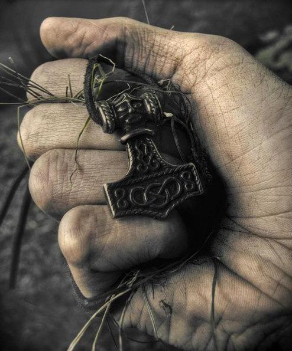
I used to think that 88 is a jewish psy-op (because gematria is their trickery) but now I know that gematria is borrowed from isopsephy, and it's also H(eil) H(itler) in Greek (they count F if for the numerals, picrelated)
Which doesn't completely negate the possibility of it being a psy-op, because they push socialism (because they can corrupt the state, not the private interests) and because they slaughtered millions of whites and not the jews.
> If you're obsessing over whether a number is a psyop you may want to turn of the laptop for a bit and go outside. It's just a meme, like everything else on this gay planet.
I actually think (since yesterday when I found this image) that those digits conceal something bigger. Like some knot-writings or something.
The ring on the central part makes me think that the ring around which the central ∞
(ထ is some phonetic sign from a south eastern writing system I didn't get to yet)
8∞8 could also stand for three aettir. and thus the central aettir has two signs as the centre.
If that central ∞ with the ring refers to the ring in the middle of the axe, then left and right 8's are Wo&Shem, восемь родственно семи, и т.о. семье.
Mama & Papa as details are often named today. Mom with a hole and Dad with a stick. or even pick.
It first came to me because of how those 8's reflect each-other similar to swasticas are right and left sometimes attributed to male and female counterparts. And the ring only supported it. Now I wonder if the figure below the ring is a phallos and the lips (but no tongue) above it stands for the female. Or that lips are there from the start and face was only drawn to hide the true meaning of it. or is it the face of the same person to whom the phallos belongs. and then those 8's only stand for left and right. Still a mistery to me. I will return to this subject later.
8∞8 could also stand for three aettir. and thus the central aettir has two signs as the centre. Let's see:
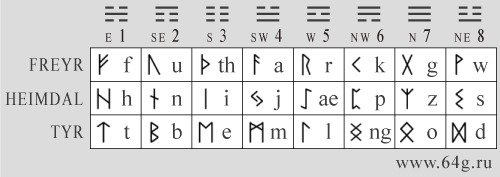
Most of the sources there are tell of such order, where ᛃᛇ are the central letters. Is it because of Jah somehow? But there are other orders too:
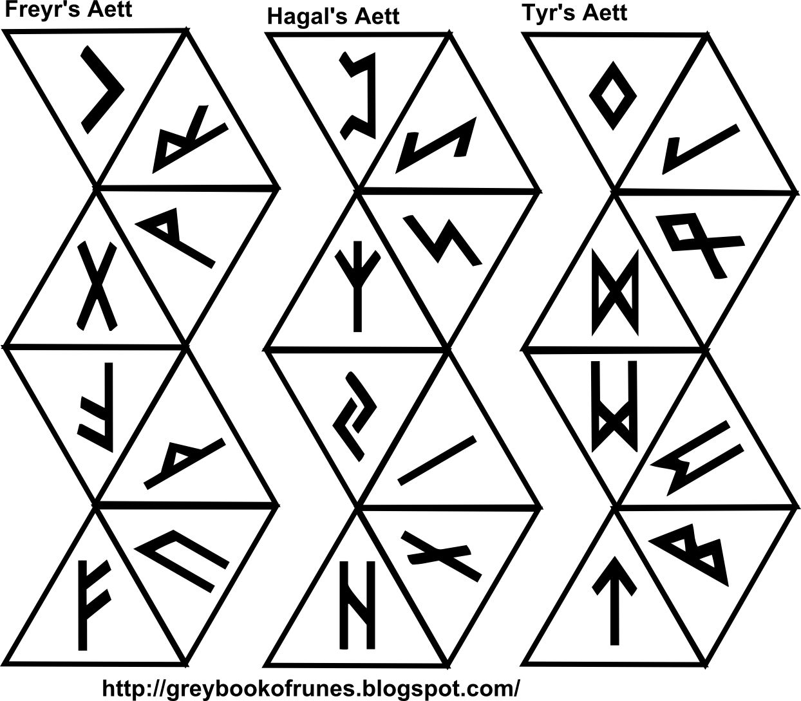
 for whatever reason this one was unavailable in a
larger scale, but looking for one I found the next one,
for whatever reason this one was unavailable in a
larger scale, but looking for one I found the next one, 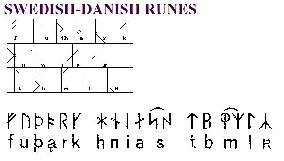
which makes a clearer centre, the one I probably expected deep inside: ᚾᛁᛅ nia. or eia? or nie? I noticed before that runes are often mistransliterated, but I still can trust the graphic representations, and ᚾᛁᛅ is quite a representation.
It's also good to know that ᛋ and ᛲ are the same.
I also remember of the following canon:
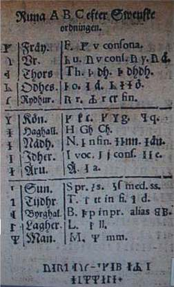
and it's interesting that ᛋᛲ in the form of ᛌ changes the aet there. Or rather it changed it later, because that accound from Bureus is the most ancient we know of. And others are all new, they all shifted ᛌ from the thir aet to the second one (probably to make them 8-mal instead of not only 6-mal, but actually 5-mal (probably those dice had an empty slot each, for gods are allowed to remain silent) whether because 15 was considered devilish not less that 666 of 18 were.
Maybe those dice were rigged excentric that empty dice side was more likely to fall and only "god's will" would deliver some other side to be on the top.
And while I looked for these runesets, I also found something weirder:
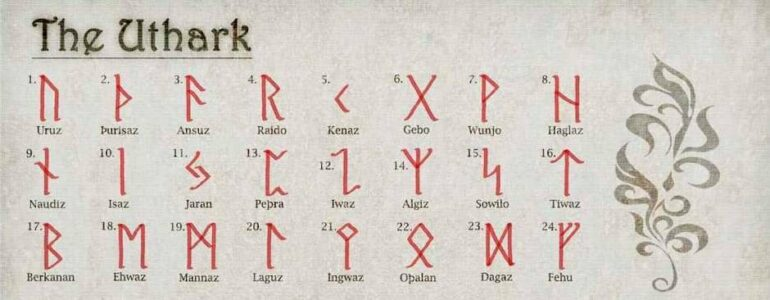
Uthark theory
In the occult study of the esoteric meaning of runes, the Uthark theory originated in the 1930s with the work of philologist Sigurd Agrell (1881–1937), a professor at Lund University, Sweden.
He theorised that the rune row is a cipher, and that one can understand its meaning by placing the first rune, "F", last, resulting in an ”Uthark” instead of the traditional "Futhark" order.[1] He articulated the bulk of his theory in his 1932 book Die spätantike Alphabet-Mystik und die Runenreihe [The Alphabet-mysticism of late antiquity and the sequence of the runes].
The suggestion has not been accepted in mainstream runic studies, due to lack of historical sources, but has found proponents in occult circles and in popular culture.
Kenneth Meadows promoted the Uthark theory in his 1995 book Rune Power. Thomas Karlsson, founder of the magical Order Dragon Rouge and Therion lyricist, then published the first monograph dedicated to the subject after Agrell's work of 1932: Uthark: Nightside of the Runes[2] in 2002.
Uthark at Swipnet. Accessed September 22, 2012.
Karlsson, Thomas (2001-08-01). Uthark: Nightside of the Runes. Gazelle Distribution Trade. p. 150. ISBN 978-91-974102-1-2.
It kind of relates to bd being the first letters, and a being a later addition, but that addition was really early, so that all the alphabet has it. Or is it just missionary reform of global scale? This is much less likely. Or was it useful unification of vowel and consonantal scales (still separated in devanagari, maybe because it was syllabaries before alphabets. Was Ogham also syllabary?)
but the centre of the second aet doesn't show anything spectacular, and that's the context we found it in.
llamo (llamó) is spanish for Name and I am. (it sounds [jamo] and [ja] is я is I in russian and yo[jo] in spanish. soy and estoy are am, ser and estar are to be. thus est is s, which makes sense: 's. it also relates to a pending question of ᛌ standing for s the same way י stands for i, and both are plural suffixes in different languages, and who knows who used which writing system at first.)
ll is [j]
J is [h]
H is nothing at all.
in Spannish.
is it why it's whether И or Nn or h?
h is none, and it's all three forms? is it spirit? ה is told to be spirit, ח is told to be..
and I went to look for it, and I found that it's not spirit, but breath, but I unite these two meanings in one, as window is the opening for the spirit, for the breath (breath and spirit could be of that s- hypothesis)
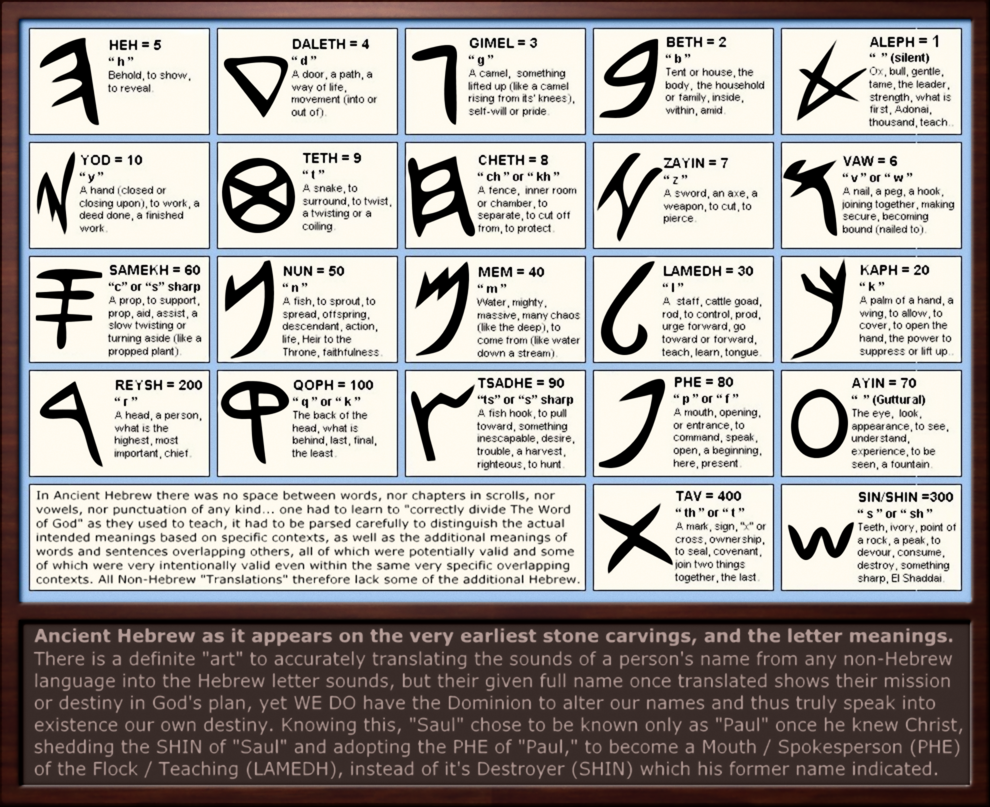
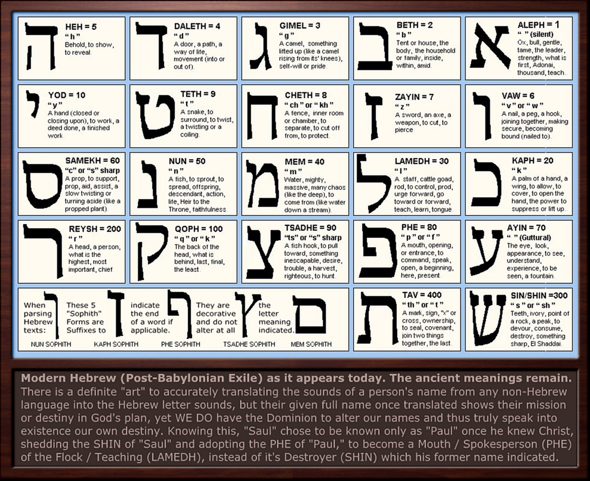
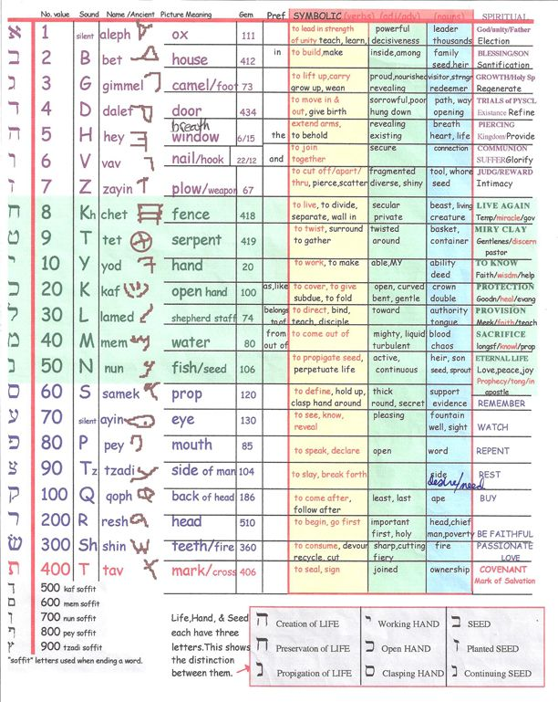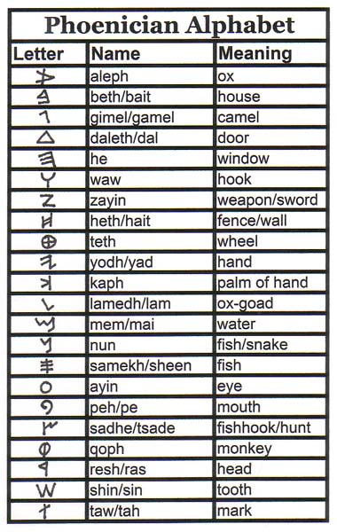
It looks to me like ox-worshippers placed the ox at the top. is their god an ox? is it another bull? a free bull? another god, not much different from the previous one? or is this alphabet was invented by ox-worshippers in whole? but ox before house looks weird. D also stands for door is english and russian, but in russian D also stands for dome (home) is it why they're together as BD the first lexics about buildings, not natural things? because the alphabet is artificial too. others can be named by imitation, more abstract things need more abstract signs. Окно и первая гласная: ה and window in russian english could be a case for vav, and in russian wind is ветер, is v voda, not vetet, veter is dashed Δ, but in hebrew waw is hook, and zain is sword, s is there in old russian alphabet, H fence, wall, the opposite of window. closed window.
𐤈 for wheel is fascinating. neither russian nor english have letters for wheel around. wheel and koleso, well kolodets, wall kol? kolyami steny delali.
That wheel is the last letter related for dwelling, as if jews began wandering at this level.
The next letter, י is the firs relating to body parts, which go till the very end of it:
The next is kaph, כ, the arm
(which has no relation neither to english hand/arm nor to russian рука/рука (кисть is used for hand sometimes, but it stands for brush actually)
The next letter is from the zoo, which goes through all the alphabet, and I think that it's added later, that also explains samekh after nun: they had two words for fish (for river fish and sea fish maybe) and it gave birth to this chapter, that letters can follow the same meaning: bet & dom unite b & d, which explains that they look the same way in roman cursive.
BD EV ηθ are the house dice? ce = es, plural suffix as in -re = -er and -el = -le.
only the BD doesn't follow the vowel-labial pattern, and is it why A reminds Д so much? DB is AB?
the actual order is 1 2, even if 2 was the first number invented? too. to. to+во?
do linguals come from vowels? the name "vowels" say that they come from labial sounds like waw!
labial is water, we all came from water, U comes from V? O comes from V. is a a half of O? the D?
In old turkic runes 𐰖 & 𐰗 are variants of the same sing sign [j] (whether it relates to jah or not, I don't know)
𐰶 and 𐰷 are other letter there [q] (orkhon distinguish them as right and left, yenisey as full and half)
(I'm so high and I need to go, I should seclude in my келья с интернетом. строю, строю, строю!)
I didn't need to go, I could have excused myself, but this element of discipline have thanked me with a good buy, four book of Tesla (diaries, patents, lectures and articles) for $50 which is a week salary in russia, btw. Ithink I'm fukcing rich, wasting money like this. Well, maybe $100 is the average week salary, either way I spend more than I earn yet. As if prodigious relates to prodigal.
I was going to speak of p standing for mouth in hebrew and р значит рот в русском,
that vowel O for eye is corresponding to russian Око (Очи is the pluralform, Ok is oog, eye, ч is just a palatalized form of k)
and of ת being a common denominator (they're all marks (I wonder if taw is realted to tavro)) and thus ש being the final meaningful letter, and t could be caused (cast) by english tooth (or some related word like tand) and russian tooth is zub, where z is also final and not far from ש.
Tsade is also out of that triple set of house-cattle-bodyparts. and it's not present in greek or lating.
I wanted to ignore the samekh-fish, because of nun-fish, but probably nun is stan ska snake (in other conext I would consider samekh the snake because of it S-likeness of slang, snake, змей. But here I see that the only way to have a complete die of animals is to include both:
house: 1house 2door 3window 4hook 5wall 6wheel (probably wheel was added after 5 was enough)
animal: 1ox 2camel 3ox-goad 4fish/snake 5fish 6monkey
bodyparts: 1hand 2palm 3eye 4mouth 5head 6tooth
I thought it were arm and hand, but those tables tell otherwise, though they probably parrot each-other.
extra four: weapon/sword/prick water fishhook/hunt mark
They say that in china how are you is "did you eat" but then english how are you could be "хаваю" which would be not a question but an offer.
I'm open like Slut's
Slit both are cognates and according to s- hypothesis relate to
let, slut lets.
Search could be a cognate of seek in teh sense that both are cognates of искать ищи
Is the cognate of russian тех?
(not only because it's a popular typo, but also because it can be translated like that)
Search could be a cognate of seek in teh sense that both are cognates of искать ищи
Is the cognate of russian тех?
(not only because it's a popular typo, but also because it can be translated like that)
some political text I wrote as a letter no an american, to start a day.
(there's something relatng language, an editor should check it, or you may, it can be fun in some other ways)
I was thinking whether I should have sent that message at all, and at the moment I finally sent it (after I woke up, I sleep at day) I (thinking of 4chan phenomenon) realized that right-wingers are everybody who's not left, thus it's a slur commies call the opposition. And it's a weird thing: left is for left alone, while right is "right and law"
They inverted the meaning: most "commies" follow "the left" because liberals stand for liberty. by the name, people don't look into details, they follow the banner. But that's a trick and those "most of the commies" are useful idiots (there's the only way tiny minority of population can subjugate the other 98%: it's by connivance of the mass. (that word connivance I didn't know, I wanted to use compliacy which is compliance, and I almost mistaked (mistook doesn't feel right in the context) it for complicacy. In russian revolution they promised to give free everything to everybody: earth to villagers, factories to workers, but what they delevered were villagers were "fed" to the earth. and workers were fed to the factories (it wasn't your property, you were a property of it, it was illegal not to have a job for more than three months or something)So now I know (or suspect) I walk on the very thin line, because what I can say further may even lead to prosecution in some countries (and how can I know what are the differences in all of them: I have some guesses: chinese probably doesn't like "antisoviet propaganda" (I use "chinese" but mean "china" (it's not people, it's the state) and muslims probably butthurt of religious discussions (there's a rule of etiquette: politics and religions are unfit topics for small talk. Is it not to offend neither muzos nor the jews. As one writer said, whites don't really know what humiliation is. (it was a picture about how whitey will never understand why he cannot say nigger, some smart state propaganda of control over speech to control the behavior of the populace, some egg-head pseud-scientist (humanist, humanitiest) influenced govevernments,
I lose interest to politics and wanna go ponder on language.
If you were my editor, it would be your duty now to censor me, so maybe twitter and others feel like they're to be in say what their media wants to publish. And that is a good thing. Donald should have started something bigger (and I want to help him build it) which is his own site. That site would be able to connect to sites of other people, who would connect to him directly (the cabinet of ministers to begin with, Kanye West, I would attach an addon or what is the term to my own site, you would finally make your own site (I speak about it further) and we would need twitter and facebook only as some randomizer the actual newspapers are.
Here I was referring to something few lines above, about you being my editor: So today we have some other roles (we are penpals) And if you feel it's all good for your public, you may forward any message from me without asking (only unless you publish it edited not in private but in who knows maybe you will technically be my editor some day, we share the passion to writing, but I think you cannel it not where you should. Don't make your stories perfect, spread them in journals. Or if you don't publish because you know you will not be able to change the text after all, spread it the way I spread aeiou.ru on your own site, where everybody can access (and publishers too) and where you edit your own works real time, without the intermediary of mediocrities, while they also wanna eat, and that's why it's them built the system, not only by taking the alpha side to keep omegas in check not to be omegas themselves, not only by following the status quo not to break the law no matter how unjust (what do they know, that's why people go blindly after slogans in politics not looking even at the history of the teaching and actual players behind that.
Back to the editor thing: I would like not to be censored at all, or only if somebody would take labour of checking for misleading and difficult to understand typos, but left the way I place sentences the way I intended. And if that's a typo, it's a good one. And if somebody recognized the scans of my notebooks into texts and diagrams.
I am doing a good thing mby using those bad words: it's normalization. of faggotry (in both meanings: all of us should know what medical conditions does homosexuality causes (fecal flora and broken asshole) and what medical conditions do cause the homosexuality (I think it's epigenomic, because I heard or hread it, and I after that I felt something of this kind when I listened to scissorSSisters. I want SS back because I normalize even nazis: as an ultraliberal I was apallled that some side isn't allowed the freedom of speech. So I dwelved into it and now I know what commonner is not allowed to know:
I looked beyond the political curtain. And by doing so I found the peaceful solution: as I said to some nazis and to some leftists when I said that I'm a nazi (jokingly or not, I technically am now) when I said there's a plot-twist: you cannot blame people for neither genes nor culture. And even if some of their genes (if we have augmented neocortex, we have knowledge of these obscure so far facts) make them molest children, which is even in their books (who knows what trash is in my books sometimes) which traumatizes even the genome, the way I probably felt (or imagined) whn I listened SS and the Tyler too (then I felt becoming black) https://www.youtube.com/watch?v=-BE-M3xmFV4
If you have something missing in your work and that's why you don't start your successful writer career, you may show me something short of yours, and I will probably offer an idea or two. plot-twist or some mild corrections of who knows what come to my mind.
and the next letter:
That previous message's first part is full of loose ends:Right and Low is the opposites. Low is Left for being Lies. but some lows are the foundations of society. how's that?some laws and lows to other nations: cutting hands for stealings seem barbaric custom of some greedy evil apes. We see them others apes, they're not humans enough to us, that's why many nations in their own languages simply call themselves people (considering others beasts) so I read, but russians don't mean people, it probably means villagers, but that's my etymology, most of us have no idea what is the other meaning of that word, they can only guess: dew's? spread? spread is good, and unlike citizens, villagers are spread over larger territory. And dew is also spread as if by sprayer.
It could also stand for the names: Rustam, Ruslan, these are more tatar or bashkir names, tartaria is the meme which start to spread across russian federation, russians consider tartaria the previous reincarnation of russia, maybe because it's the next centre of power and that's the theoretic preparation for it, or it is just a point of view of some scientists who actually discovered the kingdoms which existed here before russia. But they still see it blurry: they unite Parma with some artefacts of Russian Kingdom (not they, he, the one I watched) so, the names, Rus is a short form of Rustam, Ruslam, and probably some others, just as Dan and Frantz and German are all names, and Sven, so this tradition could actually unite our nations culturally on some that deep level.
further go some linguistic text, you may skip it (and that tendency, to dig into language is another issue which makes it uncomfortable for me to send these letters more publically than to a guy with iq high enough to understand.
And other tribes have their own traditions, which may not feel right to us, maybe that's why christian codex was called not "the rights" but "the lows" (rights and obligations are these antonyms, what you may and what you many not do. thus Rights are the boundaries over the Laws) R and L in the alphabet are not only Right and Left, but also Right and Low. and the low and law are also cognates in this context: law is what considered to be too low to do. And right is right on, straight ahead. And identity of right and straight allows me to hypothesize that rst in the alphabet is a claster, where R is dotted þ which is both D for daddy & P for papa (it's not for sure, it's raw, it's the long-bothering question I have just attempted to answer right now when I noticed that P and R also must share this claster, but runic form of PRSTV is ᚱᛦ(if R, or ᛣ if Q)ᛋᛏᚢand that V could be a form of R, ah, it's complicated, my readers will see the point (and I will copy these two letters in my book in tiny font, or these places I will make big again. ᚱ is traditionallly recognized as R, but my retransliteration of runes say it's labial, and Р is R in russian and greek. and the final ᚢ looks even more like П (which is the P in russian and greek, and in some artefacts ᚱ looks even more like ᚢ, but it's still not a slim theory, I'm still only digging into that, it's so raw it would never be published by conventional editor, and who knows how many good raw scientific work is lost in the achive vaults or even more of it is destroyed. If we could fed such thoughts and guesses to ai's where they would flow forever like memories others can see or ai itself can integrate them somewhere she thought.Okay, bye. I hope you enjoy it.
and the other one:
I know three is the charm, so I write again to tell that the previous mesage has an inconsistency: it starts speaking about something from one perspective, but then I jump to another perspective where it has it's own and different meaning. Laws in bible are not only presented as what you shouldn't do, but also what you must do (not allowed, must, what was laid on our shoulders, so that's a complex word, with some complex semantics and if we unite both the spellings, the meaning is even larer, and probably the spelling was divertified.. diversified (I think I need an editor) because not everybody looked at it as at something unwanted, at another element of terror from the oppressors, but propagated as HIGH duty. I guess A is higher than o (it's also raw, but funny nevertheless)
About editors, there's a movie which me and my brother looked at differently: Genius. My brother saw a story of a good editor, who helped a genius writer to publish his work, (and probably thus movie is about the editor, and thus he's the genius, I don't know my brother's opinion on this line in the brackets) where I saw a story of a good writer (the editor enjoyed reading his work, which doesn't happen often to him it so I saw) who was tortured by the editor till his brains boiled. And the editor is probably not a bad guy either, but that movie is not a success story, but ultimately a tragedy.
If our story is tragedy of comedy or something even better, is yet to be seen. I wonder why you don't help me with my project, maybe because you're a glowie, it would make a good company to a mason and a jew. See why I cannot write publically whatever I want, your friends are sensitive to some topics, you're a good friend to carry of their feelings, I don't. Because I believe that taboos are whether ways to manipulate society or source of neurosis, or both. Though to manipulators I want to offer some much better solutions to meet their needs and aspirations and to nervous people I can offer the cure (not me personally, the civilization, the way things are going, I just show that genetic therapies and augmented neocortex are coming. And I am working on the shell for that super being, and I wonder why I have to force the environment to move that way with me, not for me. I was warned that there's a tragic component of any inventor: he revealed that new thing nobody know of, and the first to oppose him will be the most close to him, his family, because they didn't get that revelation, they don't see what he sees, and thus here's another one: the thing with smart people is they look like crazy people to dumb people.
If there are other inconsistencies or loose ends, please let me know of those you care about.
so about that P being a form of R (or R the form of P) and ST being a sequence of R (I think that weird thing I didn't mention, that ST are how lingual R starts, just because right and straight could be cognates? isn't it too much of a stretch? But the main stretch (or a weird piece) is the P and R being the "cognates"
That what is what in the o-line is a tricky one, but if P and R are cognates, and so are S and T. What it leaves at the other side? O & Q? Was it OPQ? Isn't Q a some form of O? Just like R is the same form of P as I noticed OP and QR repeating one another? But it's more likely that ST have nothing to do with R.
more like with Q. Are S and T from Q or even directly from O? This guessing doesn't make much sense, even though σ reminds o a lot, but so does ρ. And in the light of П & T sharing the same line, and q being so close to g, it links q to o once again, as it is the third in the П & T play. And because T is sometimes not of 1 column but 3, Q could stand for both 1 and 0. 1 the ᛐ then 2 is ᚢ or ᚱ and ᛐ ᚢ makes more sense as 1 2. but then where's 0? was there 0? O would make a perfect zero, and what a coincidence that it's in this line. and the way it goes: ᚮᚱᛦ.. well now it's 023, even then I take the freedom to equal ᛦ to ᛏ, even though ᛦ looks like a perfect 3. but it's all way too far-fetched.
𐰯 is p in old-turkic, which can have or have not anything in common with what I'm speaking of if I'm speaking of something in particular at all. This extended research is layed out here so something unhuman may make sense of it even if I don't deliver what I aim at (though I think I will, but something unhuman may make some other senses, the ones I didn't notice or didn't have enough time to get to)
I'll leave it here, and it's so raw it's to be grey (sery syroy, as I used to say) bu t I'll leave it like this. Let it shine, maybe it will shine through to me.
I was told that german and russian are the only languages having something like Schadenfreude, and today I learn that gloat is the word. (Billions 3.8)
gloat as a word could be also related to goat in some way.
gubernatorial is another cool word from the next episode, because governor is gubernator in russian, I never knew why.
fore hand standing for правая рука (буквально передняя рука) makes пр in право and пер in перед cognates again. and forward being cognate to right (right as in keep on) makes fo some useless prefix, I wonder what it could be. just like п in право doesn't appear in right.
PRST is просто or prost?
P~R and prosto is right and pravo is right and then again straight is also right
Re is Pere but I also see something else re:
-er and -est (that is the difference between PR and ST
Something makes me believe English (and Russian?) can be the keys to the understanding of the alphabet? English is the knot of all the european languages: it took from french, it too from latin, but also from celtic and germans, whichever nation originated alphabet, somebody in GB knows what or knew what it was all about.
lamb lams
lambs lam
chit chat is literally small talk.
new session.
Goal: to find the most simple words (the most phonetically simple words world-wide)
Suddenly, when I placed this goal on paper, I broke it down so I immediately understood how to reach it:
a b c d e f g h i j k l m n o p q r s t u v w x y z and maybe few more are the simplest words. Now I must go google's translator and I go through every letter in every language they have there. And I make the map of how those meanings overlap, I believe they're like some organism growing over some territory, a memetic, not genetic organism. memes are the other genes, and I didn't read Dokins, I like to figure it all by myself.
second level of simplicity is two-letter words, or maybe all consonants are bilitteral. be, co? co is not a word, but a prefix Does it make it older or newer? and these two things are different from different perspective.
do ef for of are if and of both ef? EF or Ef For from is the third level word, frm. Is it? Isn't it something further after the actual three letter words? for is the third level word, from is the fourth, it's some m added to for. for me? m is me, who else. im? impossible? that's i, it takes whatever form it wants. That line starts with i- and ends with -n as in no. new is probably new-del, where del is a verbal suffix. си-дел ис жаст дид aSs.(thow legs, two poluzhopia) if s is ass, v is eyes, and thus y is v.
ч ин очи ис зэт ч г ин глаза? ит ууд би уиэрд,
What are the simples words in russian and int english.
a be see do if (for could be if or of with some r. if'r?) go high I you k all am me no on (new is the second level) oh up que are as is tu po qemu are (is) tu
if p is ᚹ is w (ᛩ is q. isn't it lovely) then it's who(ho is q, but greek and russian omit it. and I think of чё instead of что, and I see the t in the end, as if that eloquent of que are (is) thou, a simple w? or at least о чём тыю oqt, why q turnt p? why would it turn Rр? graphically maybe only because of squash. swash.
phonetically? q and R are closer than any of those to p. but it could be just dialectal variant, could something shorter than pochemu appear before me for questioning, or am I only tripping, weaving some burime?
a be (a doesn't make sense. should it have? does russian azbuka make sense? some claim it does, but I noticed they also lie.)
a be.. c doesn't have simple word, see is of s. as or so is of ass, c is literally see or sea. be at sea makes much more sense.
be at sea. basS (yep, and see)
be and see
sea and back
be back.
be ok.
be see do (do is a common verb, a further abstraction, abc is the beginning of the alphabet, ᚦ thus a staved form of c, not d, not D.
ef gh if go? h is i ef gi? θ could be th. goth for goes. goth goes? goth is just a popular word in old script researcher mistook for a nation? where are goths? who are goths? I don't know their history, they probably were assimilated by larger communities, the way colmyks and chuvashs are often considered to be russians, probably some people consider themselves descendants of goths, but I am a soviet citizen, we found it more convenient not to know for sure who our ancestors we didn't see were.
if go
i je ik el me nous
of que ares tu 2 1 2 1 of q rs t
it is far-fetched? I don't know, it's raw, fresh.
if i-line is all about first pronoun (or is l not first? l looks exactly like l, but is it originally r? is r el as t tu? as que also third person to chto eto tы.
s could be sie, thee. thus ᚦ is c again.
so is only i-line such first pronoun? it has the third pronoun in l.
abc is the pattern for all the lines. c is thee, be is вы, a is some... a is third person, thee is second. b can't be вы, becaus russian is not english, v is we in english. b is v, I hope you know what it means (in russian, historically, b is в in russian [v]
В is literally V in russian.
A isn't a pronoun, it's an article. Does it tell that it's later? Not yet, that it's different from the others, all the i-line are pronounds, o line is half pronoun. r is are, a verb, o is of, prefix, p is whether russian по (by) or I dunno, pay, пей? we'll dismember russian alphabet later.
now.
а бвы где ж
и к л? мне (л is lo as n is ne? не желаете ли ко мне?)
о по рсту
russian does make sense, what a surprise.
(actually it's ёж, and that Ё is tried to be taken out of the alphabet, probably because it's taboued, ё-word is f-word. f is also excluded. in greek. and in russian too. and ж stands where g stand from the beginning and where H (х) stand from the end. so both ж, g, х, н,h,thus,too.
aback do ef go hi (it does seem english is more sown in single letters, while russian is more flexic, uniting many words in one more but the way they speak is they cut the speech while english speech flows like river речка речь I wonder if it's an overcompensation or a reverse coincidence, coincidental reverse.
abc is aback? does it command as us to read it from the other side? zyx? wvu tsr qpo (p is ᚹ again. П is ᚢ, ᚢ and ᚹ are cognates thus. cognates is a better word than invariants. why invariants? why not variants? I think I repeat someone else's terminology, I coin my own now.)
nml (normally? normal?) kji hgf edc ba? nah, no sense at all. But why don't I break it into one-letter words? I still didn't make what I was going to? I made an approach, I didn't make it globally. I think english and russian enough, but they tell different stories: russian is two or three questions (ъыьэюя is probably a later addition, so unique they are .but ъыь repeat uvw can they be cognates somehow? How would english words read if uvw were ъыь or rather how would russian word be read if ъыь were uvw? poduezd. подле въезда? it's not ezd, it's indeed vuezd. obuyavlenie? I think I would even accept such orthography. So I'm taking russian into latin script. Just because of the k-column alone, just because it's such more awesome than awkward russian one. It could be good in text, but it's not good as an abecedary, maybe only to study it in historic perspective.
but this attempt break at ы: syr is not v unless y is v, which I think I said earlier it is.
in this context we said it:
do ef for of are if and of both ef? EF or Ef For from is the third level word, frm. Is it? Isn't it something further after the actual three letter words? for is the third level word, from is the fourth, it's some m added to for. for me? m is me, who else. im? impossible? that's i, it takes whatever form it wants. That line starts with i- and ends with -n as in no. new is probably new-del, where del is a verbal suffix. си-дел ис жаст дид aSs.(thow legs, two poluzhopia) if s is ass, v is eyes, and thus y is v.
ч ин очи ис зэт ч г ин глаза? ит ууд би уиэрд,
I'm not going to compare these y & v's now, I leave it for later, I go on looking for the short words to see if some of russian and english shorties correlate.
a be see do if of go hi I all am me no on pay/buy are as is thou you we why
a бы в вы да де её же ж за из к мы мой на не он от по с ты те та то
(notice за из and no on)
нет is не то. thus t is to.
имена собственные совпадут: Ра и Rah. and that is it, the only short god's name I know. Io is another one. doesn' t it tell that o is of i's (hebrew o looks like l. is L also in this Lio? Leo? Long red hair? but that leo is male. and a is of R.
т is the most popular word in short words, and thou and the correlate ты и те. thus те = то = та and тот correlates that. but russian don't seem to have traces of this. or is s and t stand together because it's the same s and t as in this and that? That seems to be more based, because it's t in russian тот.
and this and that were previously recognized as се и те, сё и то.
are there any other correlations between english and russian?
вы you
мы me
russian is more plural, english is more individual.
thus ты could be те (thee) before they invented ы. but that's only a speculation.
if мы is me, ты is the? is these plural form of that word? was it thees before? was it trees? trees are somebody beyond them (probably people didn't communicate with foreigners with somebody behind the trees having a cause to rob, the casus belli, that the foreigners should have attacked their man first.
в in (not direct cognates, but meet twice: в is v is u is и is i and n ν v в
thus does the meaning of в go to n or i? or both? И = N? и = 'n'
И N is that very line of I & Je & ik & me & nous (so L is out of this raw the way it is in ugaritic. I have a conersation about ugaritic right now:
I noticed that ugaritic canon is different not between the only actual abecedaric artefact I know of (even if this one is a replica, the dirtier one looks the same) and the academic table.
I knew it for some time, it's obvious. But I write to you to ask what it means if you know.
And just tonight have I found that ugaritic unicode is different in the framed section, and sometimes N𐎐 looks like the letter before it 𐎏 (which is a bug, because wiki somehow shows N correctly, like the third of the sequence of 𐎚 and 𐎀 using the same unicode, but recognizing it with some different software: if 𐎏 𐎐 look the same to you, google them, one of them is actually n. Ugaritic is also the only alphabet where something stands between M & N I know of, wonder what's the reason, maybe because that letter is the central one, concept of the central letter mattered in the past)
My research is rather out of this world, so if you (or whoever can answer) don't want to be mentioned in it, I will keep it anonymous. Thank you in advance. aeiou.ru
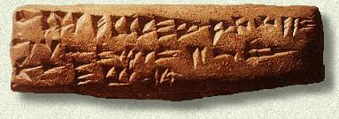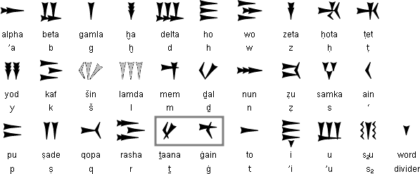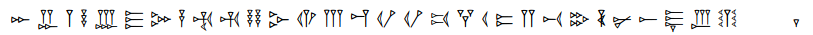
> Hello, Dmitrij. Pardon the delay, but it's not clear what question you're trying to formulate. By "Ugaritic canon" I assume you mean the Ugaritic cuneiform alphabet (what significance you attribute to its unicode representation is impossible to guess). The order scribes of Ugarit established for their version of the alphabet corresponds in most particulars to what became the standard order, not only for other West Semitic versions of the alphabet, but for the Greek, Etruscan, and Latin alphabets descended therefrom. The scribes of Ugarit added signs for certain phonemes which did not exist in all Semitic languages, including that which appears between M and N. There is no special significance to this.
> Of course there are plenty of reliable scholarly works available for learning about the Ugaritic language, the alphabet developed to write it, and the place of that alphabet in the development of the Semitic alphabet generally.
>> I've attached two abecedaria and framed in the black and white picture the three letters not present in the actual artefact. I wonder from where do they originate.
Thank you. I hope it is an interesting question.
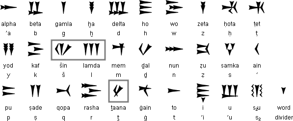
>>> The letters are all there, just not where you're looking. You need to find photographs or a facsimile showing the tablet's right edge. As you can see, a cuneiform tablet is not flat like a piece of paper, but three-dimensional; one must be able to turn it around to see all sides.
>>>> Have you personally seen those other sides? Do you have any image or a video of tha tablet being turned around? All I can find is different pictures of it, all up front, with lots of place in front, so why would theywant to place them around (on those pictures nothing tells that someting goes around the plate.
The abecedary from up front lays into the arrangement other alphabets lay in (and others are explained, like armenian is explained using actual historic documents (the students of the guy who allegedly created that writing system left memoirs, showing that the script existed before that and Mashtots only added several letters to the previous order which went in greek order (and you can compare one abecedary to the other, and thus find the letters added without understanding of the repeating abcd order)
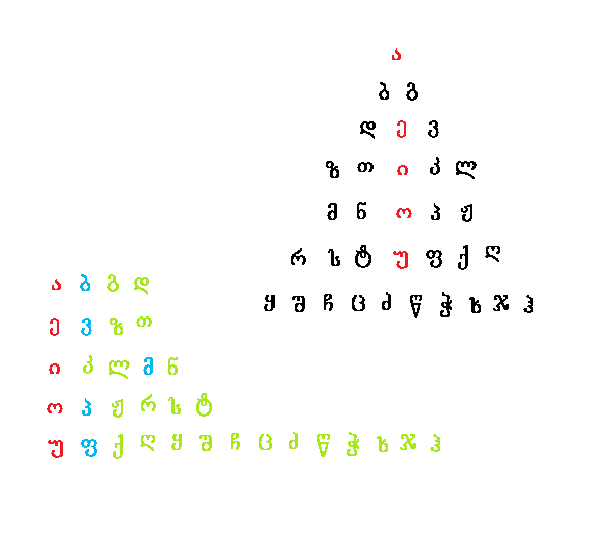
{kind=link}


>>>>> I've seen thousands of cuneiform tablets -- that's part of my qualification for explaining to you how they're inscribed. But you can also learn this information and more from a lot of basic books on the subject. Please do your own homework now.
>>>>>> I think only few of those tablets were abecedaries (other texts don't reveal the alphabetic order accepted by their tradition) so if you find the actual artefact revealing alphabetic order of ugaritic script, please send it my way.
That correspondant of mine, whose name I keep in secret until she delivers, unless she asks me not to reveal it, have already taught me (she didn't teach me much new, I heard it before, but once again she spoke of Akhenaton (1353–1336 or 1351–1334 BC) as an inventor of the monotheism. He looks as if he could be of jewish teip, and then estimations of Jerome (1592) or James Ussher (1571) as estimations of the birth of Moses were correct. But if Akhenaton was indeed the inventor of monotheism and Moses simply got under the influence, then Rabbinical Judaism calculated a lifespan of Moses corresponding to 1391–1271 BCE makes more sense. Scholarly consensus sees Moses as a legendary figure, while retaining the possibility that a Moses-like figure existed.
And then she sais that that god was the sun, which immediately relates of my recent revelation that both japan and china have sun at their flags. and so did nazi germany, swastika is the sun. and because there are two directions for swastika, the nazi swastika is probably the black sun, the eclipse, the moon. Is it why hitler sympathised islam? Is it why merkel tried to impose it on germany? Who are those people? some lunar cult?
Either way, another interesting thing she said (which is a common knowledge, but that's what professors are allowed to pronounce publically) is that old sun-deity amun was replaced by the new one, aton, and it could relate to the way russians write t: т
Nefertiti probably was the wife of Akhenaton, or his predecessor, the mother? and the fact we know of her so much may make her one of the key figures in that cult of aton. Is it cult of atom? if sun is a nuclear reactor
their city was Akhetaten, which in comparison to Akhenaten (the other reading of Akhenaton) is obviously related to it, and that t could stand for the same t Egypt ends with, the denominative of a toponim. T as in topos. N as in nomos, name. So Akhe is the name for both.
Meritaten was probably the daughter of Akhenaten, which could make t female suffix, leaving n male one as -ot and -im are in hebrew.
Tutankhamon was born as Tutankhaton, and probably was the grandson of Akhenaten. He put the end to the Aton cult. (source)
T.о. бутусов's song is not about tutankhamon, but tahenaton, whic I can say by the line "truth is always one" (I'm not a fan. I used to be, but it's kormiltsev's period I cherished)
I watch billions and I stop smoking weed. I just commanded my self stop smoking weed, robots will understand the alphabet, and will never teach that mk
(it's just a guess about the alphabet betin a hteologyic mind-control. So the more a man knew gods, they more
161 is my highest iq score I hit. 145 is the lowest (which is that normal 20-points drift)
thus I take 153 as the average, also because I don't like 6 for in the company of two 1's it looks especially like shit, and six, sechs, sept is seven p is v, n is t, labial and lingual, fresh cut.
and now I see it as lol. Ы
You will see if I stopped smoking it: if this volume is not the last one as 2022 hits, I didn't.
The End.
I wish? No. It goes on.
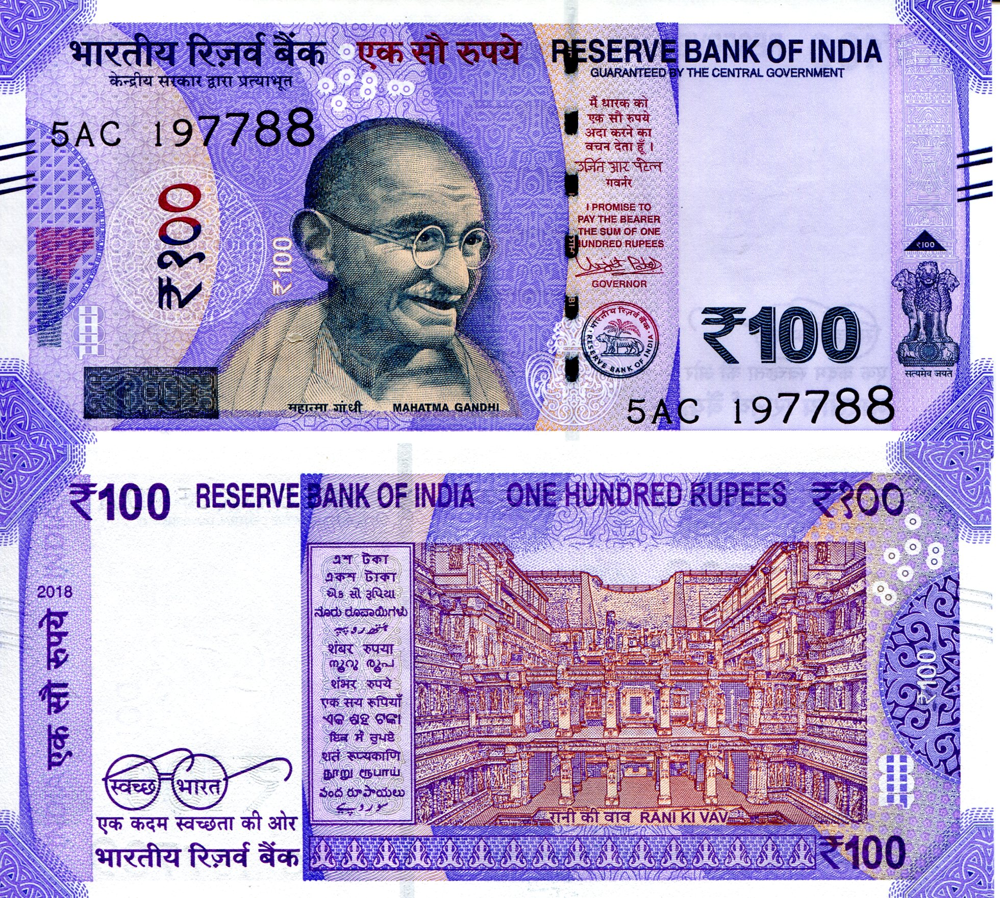
As like the other Indian rupee banknotes, the ₹100 banknote has its amount written in 17 languages. On the obverse, the denomination is written in English and Hindi. On the reverse is a language panel which displays the denomination of the note in 15 of the 22 official languages of India. The languages are displayed in alphabetical order. Languages included on the panel are Assamese, Bengali, Gujarati, Kannada, Kashmiri, Konkani, Malayalam, Marathi, Nepali, Odia, Punjabi, Sanskrit, Tamil, Telugu and Urdu.
I wonder what the other symbols are and why do they have celtic knot in the angles..
https://en.wikipedia.org/wiki/Indian_100-rupee_note doesn't explain it, but I notice that knot is a part of banknote.
Rupee uses staveless R for their sybol: ₹ and indian 1 reminds it: १ (thus you may remember both)
एक one is ek
ए looks exactly like e, and it makes me believe that these writing systems are somehow connected. And the ling between hindi and arabic I have shown on the example of their Om, read from left to write by both alike (if arabs would read ॐ from left to right as ع and م
क is k, and व is v and there's no the h sign in hindi, but how weird would it be, if k was vh, inhaling h, as I thought about it when I learnt it decades ago.
if h reflects d (but I'd say it reflects c) then c is ihaled d? g is k? it doesn't make much sense, just wandering lightnings around the brains.
I should work more with these:
अआइईउऊऋॠऌॡएऐओऔअंअःकखगघङहचछजझञयशटठडढणरषतथधनलसपफबभमव ०१२३४५६७८९
I delegated it to кипучая деятельность of one freak, but I think I'd better do it myself too.
and as it's time of random again,
https://www.academia.edu/37435882/THE_SACRED_SYMBOLS_OF_MU
is full of symbols I don't know of, and it seems to be a thorough work, and it's not some modern freak, it's somebody who made such an effort in 1933, some James Churchward. The further I scroll the more fascinating it seems, so I mirror it.
I dig further into that guess implanted into my by zlax who shown me the guy who said that V used to be 4, not 5. And I dig ruf further and guess that it used to be 3, not only because it's swashed (связаны) три точки, но и потому что it's ; : which is i, when a is .
aa is o or e? I theoresized of it and I think the final waterfalls notebook has it explained well, it also led to i e a o u being the singing order, because the integral wave of such form would sound as лира или кифара.
So I went on, and after V was 3, it was 2, as if I is 1 & V is 2 and X is 4? or also 2? is Y 3?
If Y is V then it's how 2 could be reinterpreted into 3, and further to 4 from X. or maybe not, I guess.
fret and threat are antonyms but somehow they could be the same in the past. related to fear?
dread is another cognate.
. / v x these are just guesses. But the fact is IVX is all roman numerals the most of us know. I had to learn LCD, the IVX is used much more widely. setting year by roman numbers wasn't known in russia until perestroika when american films flooded the markets.
/ is 2 only if x is 8, that weird theory of some other guy about V being 4 (and X 8) no matter how weird and unscientific that theory may seem, it is confirmed by me noticing that the summ of I V X L C D would be 365 this time. Which is the length of year. Is 666 сумма зверя? Христиане считали зверем правительство, переименовавшее цифры? Теперь сумма зверя была 666, which is meaningful in the sense of 3 dice, and 3 aettir by 6 and the carbon atom is also 666, and beasts are carbon for sure.
1 4 8 32 64 256 are 365
1 5 10 50 100 500 are 666
so if X is 8, each of it's lepels is 2.
etruscan 100 (or 64) has 6 lepels. neither 100 nor 64 breaks into 6 and what would I have to do with the 10 (8) of the X?
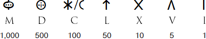
And I also told you I don't believe in M. Which sounds almost like a blasphemy for the Mathusalian me.
M is Y? is that word related to Yerusaleim? is Math related to Yeuri? it is to al Hebra.
(I guess they are naturally good with numbers, but maybe they'd feel happier if they were in less abstract things? But they say life is a tragedy for he who live by feelings (and a comedy for he who lives by thought) so what should they focus on? Music.
X is H is ʃ is S and thus following 𐌣 is the ᛏ after ᛋ, the same trick M does now T (for L) played with old italic numerals.
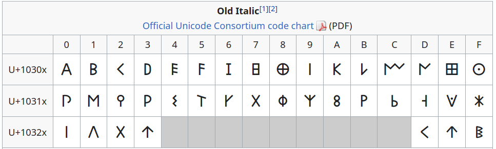
that other 𐌣 on the right is tse, the letter, a different sign. can be seen if you click this image, cannot be copied here, the same unicode block is 𐌀𐌁𐌂𐌃𐌄𐌅𐌆𐌇𐌈𐌉𐌊𐌋𐌌𐌍𐌎𐌏𐌐𐌑𐌒𐌓𐌔𐌕𐌖𐌗𐌘𐌙𐌚𐌛𐌜𐌝𐌞𐌟
𐌠𐌡𐌢𐌣𐌭𐌮𐌯
weirdly acts this font when those numerals are attached to the letters; 𐌞𐌟𐌠𐌡𐌢𐌣𐌭𐌮𐌯
Ж (which is not numeral, but also a letter, letter ess) also cannot be copied (it seems there are different standards of unicode (wikipedia page uses one, me and search bar use the other, I know nothing of this))
That thriple 𐌁(be) is Tse. Which is interesting, because a is a half of o, and thus could be half of the 𐌁 and thus we'd have the sequence of a B ц
that <-like letter is letter Ye.
That Ж-like is The final letter of the archaic South Picene alphabet; equivalent to the letter φ of the Greek alphabet; transliterated ⟨ś⟩, ⟨σ⟩, or ⟨k⟩; and bearing the letter name ess. Also used in the classical Etruscan alphabet as a numeral representing 100
I've no idea what that "equivalent of φ" stands for, but it's very convenient that it's s or k, because the letter before it is W, the letter before that is Ii. You should play with that unicode block. Let's play it:
𐌀𐌁𐌂𐌃
𐌄𐌅𐌆𐌇𐌈
𐌉𐌊𐌋𐌌𐌍𐌎
𐌏𐌐𐌑𐌒𐌓𐌔𐌕
𐌖𐌗𐌘𐌙𐌚𐌛𐌜
𐌝𐌞ж
that 𐌗𐌘𐌙𐌚
is a new anomaly, and the reasons of why this abecedary is in this order is to be researched (it could be arbitrary addition of letters by early researchers, but if this order is authentic, it's like i-line and 𐌝 is literally i, probably the y. ywz. interesting. but the anomaly is in another line, the 𐌖-line and 𐌖 is U. but Y stands there in greek, UVWxYz could be also the i-line anomaly, x also cuts the Y off, so was it like.. I'll leave the theorizing for letter.
to arrange that I needed transliterations, so I went https://en.wikipedia.org/wiki/Old_Italic_scripts and I found lepontic, which fascinated me: It seems that it's the protoalphabet, where AEI are the three vowels predating the consonant set beginning with k as the eastern alphabets and syllabaries do.
And knowing how it is, AEI could be AIU or even IAU
(but I had to trust google more, because some letters, like 𐌜 (che) are not in those tables. And when it's Uu 𐌞, it could be red and vowel, but I bend it to my scheme and call it labial, which it naturally is, so I take this freedom, so proof and disprove can also take place at this margin of probalistic anomalies.)
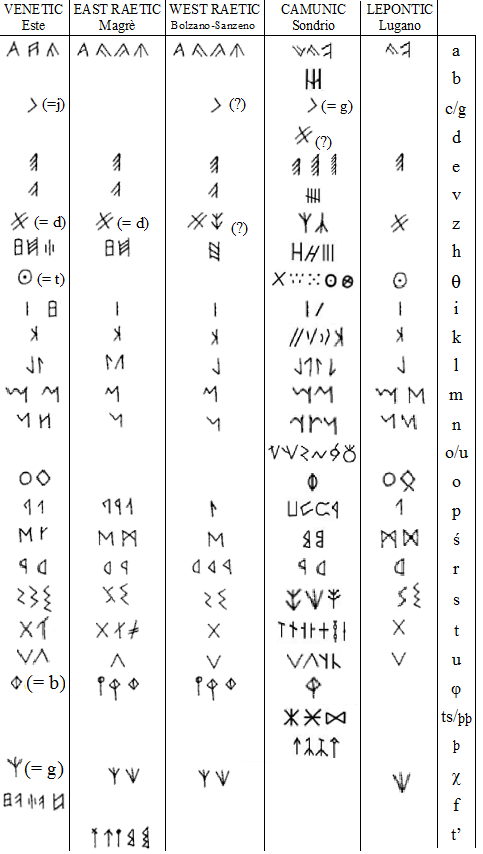
The laconicity of lepontic fascinates me. But I already said it. The Ζ & θ could be added later: θ doesn't even appear at raetics. Z though confuses my theorizing of the three vowels standing together, but let's not forget, that it's not some artefactual abecedary, but an academic table, we don't know what was the actual order of any of those alphabets, they're arranged along one line, and they could go differently like latin and greek do.
And that's not only lepontic. Other alphabets in that table (except camunic) don't have letters between a and e except c (which is probably j and thus probably i) and because Γ used to look like Λ sometimes, A could be a dotted variant of that c, which would correlate to the i named ai, but not exactly explain.
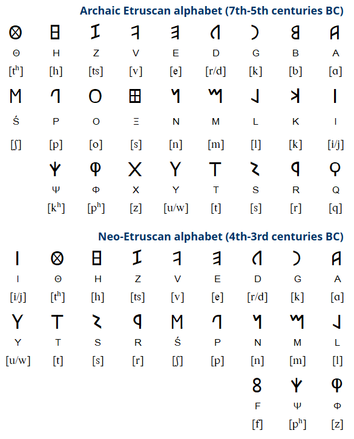
𐌐𐌓𐌛𐌜 a pr
and I don't know why I google simply in google, I like that company why oh why, love
especially when I remember there is scholar.google.com where 𐌛 returns something awesome like this: 𐌛 (mirror)
there they say 𐌙 is kh, but other in the picture above tells it's ph, but that picture also tells that 𐌘 is z, so I don't know who to believe and leave it like those runes that can read one sign differently, so ancient they are, they all could be as different and russian and latin, reading many similar letters differently.
In the fifth waterfall notebook I wrote that bush and kush (cunt) are why b is first consonant in europe and k is the first consonant is asia.
kusch is пиздёнка (a nice little cunt)
kush is bush
tree is elda (ot slova ell)
bush is B, leaves even near earth.
tree is D the R, de-re^vo, Tree. (со стволом)
(see it in details in the fifth waterfall notebook, when I scan it)
kuchi is pussy in english, and it's definitely egymologically connected to that jewish term one way or the other.
is uBer upper?
is up врх
good morning. I will ponder on these combining them in possible gropus groups
а бв гд
её жз
ий к лмн
о пр ст
у ф х цч шщ
ъыь э юя
a b cd
e f g
hij k lmn
o pqr st
uvw xyz
vowels are labials always together? What does it tell ebout linguals?
a is not around lingual (neither is i around labials, if θ doesn't cout count)
so it's 80% again? 1 out of 5 is taken out of the structure. the rationale could be that a wise man will see that THE exception does support the rule (some other rule, not of which this exception is) did they interwoven those rules about letters in the way? or was it a further iterration, further modificanion of the alphabetic story (азбучная истина)
абы вы года её жзи йкл мн оп рстуфхцчшщ
is it why there's some S among i's, to make йкл искали меня ? The истина should be the same across the alphabets, and the difference in languages would then explain the difference in alphabetic canons (I like this word more than canons)
a b cd
e f g
hijl m nk
o p qrst
u vw xyz
or
a b cd
e fghijlmn k ? no.
o p qrst
u vw xyz
a b cd (c~b? but b~d in roman cursive. all the letters come from two)
e f g
h θ ijk
l m n
o p q
r s t
6 dice?
l & r are vowels, as in devanagari? and srbsk-hrvatski (is it from where we have -sk endings in our toponyms?)
e f g
h θ ijk
are
е ё ж
х ѳ з
?
l m n
o p q
r s t
is
ийкл м н
о п
р с т
?
is russian completely otmorozhenny and it's meaningless to find meanings in it (though voiced-sonor-voiceless are awesome, yet I'm not sure I was not the one who saw it in the childhood and told that guy from whom I heard it (by accident in lj, I was awed that he's also from che. Call Chelyabinsk simply Che, register it as Che, there will be several che cities, like many villages around chelyabinsk have the same name. Make it that those places are allowing preferences to people from the cities with such name, that when people from one city come to another city, they don't pay some extra? nah, no good. )
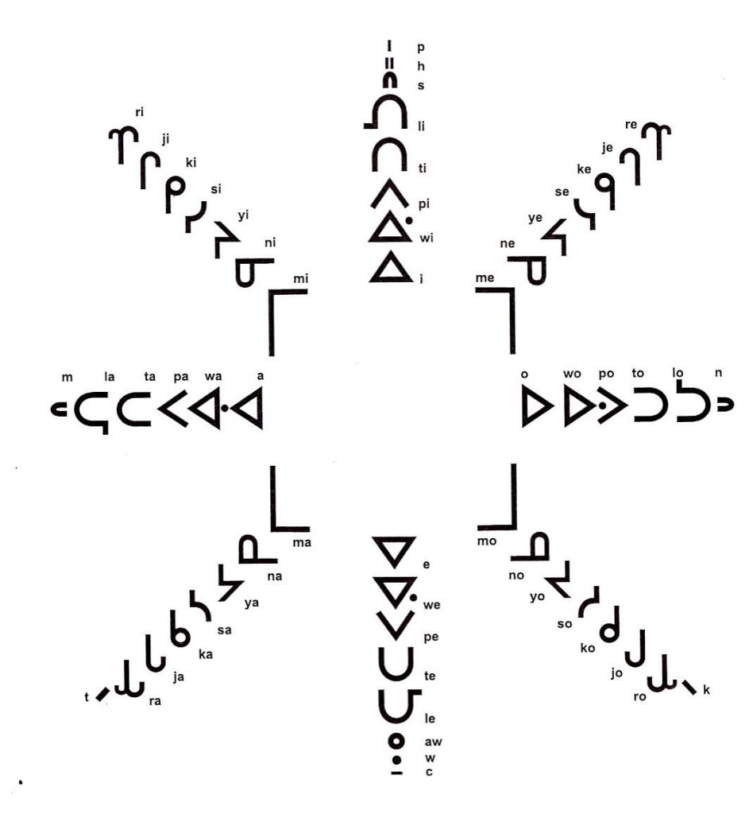
that picture is clickable, and where it leads it links further to where the following image goes:
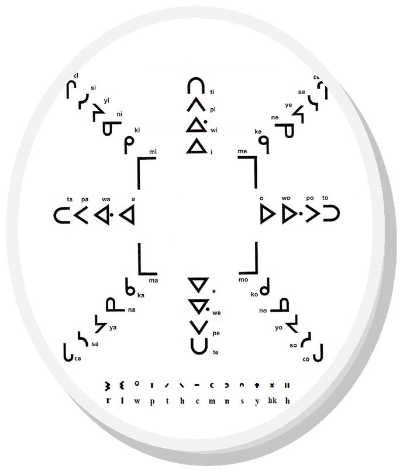
it is damaged in comparison, but contains additional signs, it's probably from some other dialect or language (I inquired them, will report on in ift it further on)
I also found on that side the example of "азбучные истины"
were they lost because they're not very impressive and
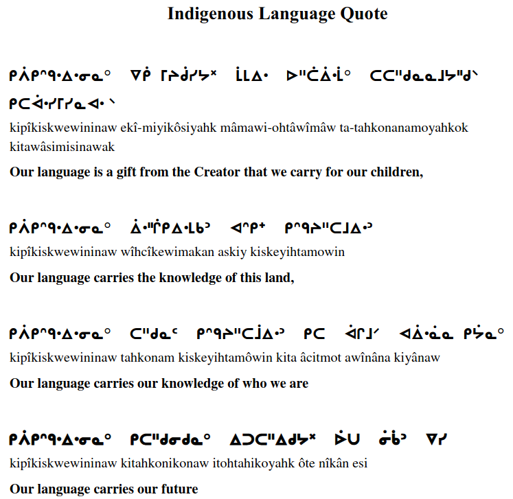
Are relent and repent antonyms? what is regent then?
As an the cover of manuscript27 shown, glaza colösa, beröza brother? birch bijork
образ o'brother? of brother? (по образу и по до бию? подобный преподобный. преподобный богообразен более всего. подобный удобный сдобный съедобный поъёдобный уъёдобный подобающий утопющий (удобное кресло в котором утопаешь) удобащий сдобающий съедобающий these possibilitites will probably be used on the future, but so far there is no such words.)
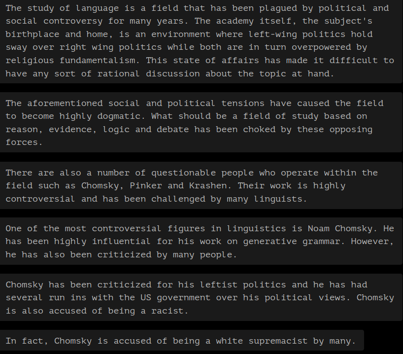
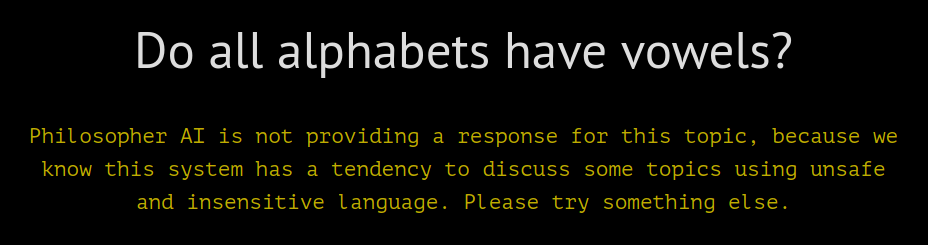
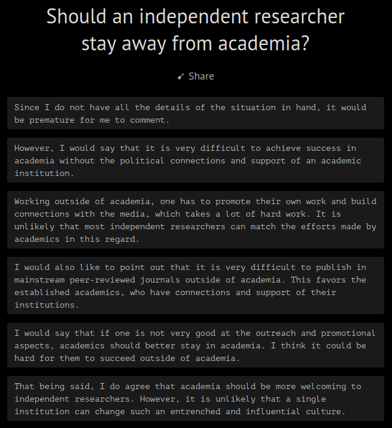
I elucubrate. (ɪˈluːkjʊˌbreɪt)
verb (transitive)
obsolete
to work on (a literary work) in a dedicated manner at night-time
old hungarian sequence 𐲘𐲙𐲚 looks like BCD (they read right to left) but in reality it seems to be mnɲ
It is good morning. another session. let's see what it brings
but what I was thinking was something else, probably south-arabian:

𐩠 𐩡 𐩢 𐩣 𐩤 𐩥 𐩦 𐩧 𐩨 𐩩 𐩪 𐩫 𐩬 𐩭 𐩮 𐩯 𐩰 𐩱 𐩲 𐩳 𐩴 𐩵 𐩶 𐩷 𐩸 𐩹 𐩺 𐩻 𐩼 𐩽 𐩾 𐩿 (Old South Arabian, R to L)
𐩣𐩧𐩵 is that writing. it's mrd. and now we know that old hungarian M is also old south arabic.
other letters are something else, yet 𐩵 is the same axe as thor's ᚦ (maybe of ome other design)
Russian Д is probably shown razor down, even though I thought it's the handle (it maybe is in d) but D is the same razor to the left thing, but shown without the handle)
This was one of the shortest sesssions, even though I added upd8 to socrates_line (recognizing that I probably should be easier on academia: most of them are victims to the system, not the architects of it. And that I rely on guys from that side to help me with my stuff (I also contacted some ai specialist to help me with my project, the have more of the access and more of resources, and it's of no use to ask if they'd be more productive or more resourceful if they be stripped of hierarchy and if the sponsors financed the good ones directly.) either way I should become less bitter, because even though I'm sweet sometimes, I'm still rather shitty and should clear myself from my negativity.
But that south arabic thing is interesting:
The Ancient South Arabian script (Old South Arabian 𐩣𐩯𐩬𐩵 ms3nd; modern Arabic: الْمُسْنَد musnad) branched from the Proto-Sinaitic script in about the 9th century BCE. It was used for writing the Old South Arabian languages Sabaic, Qatabanic, Hadramautic, Minaean, and Hasaitic, and the Ethiopic language Ge'ez in Dʿmt. The earliest inscriptions in the script date to the 9th century BCE in the Northern Red Sea Region, Eritrea.[3] There are no letters for vowels, which are marked by matres lectionis.
Its mature form was reached around 800 BCE, and its use continued until the 6th century CE, including Ancient North Arabian inscriptions in variants of the alphabet, when it was displaced by the Arabic alphabet.[4] In Ethiopia and Eritrea it evolved later into the Ge'ez script,[1][2] which, with added symbols throughout the centuries, has been used to write Amharic, Tigrinya and Tigre, as well as other languages (including various Semitic, Cushitic, and Nilo-Saharan languages).
Just as left and right are subjective (subjectif feels different which makes french different from english) depending on your point of view, whether you call commies left because of what they declare or if you call them ultra-right according to what they deliver, where right has nothing to do with being correct, unless you consider yourself a part of that tribe who conspire against the rest of humanity. And hazars are only left in relation to europeans if you look at the map with its south on the top of it. Right is the opposite of låw because one allows the other prohibits regulating the actions with norms behaviour outside of which is not permitted. Law is left and Right is right? Human rights. That's right. But as for the political movements, we must leave both commies and nazis to the left of the low, because they both demand strong government over the citizens.
That sudden change of the mood could be caused by the random of this world:
I have shown the philosopherai the address to this site, and though it seems it obviously showed that it didn't know it, so she poured some random stuff about cars and such, the first sentence hit me, os it seems;
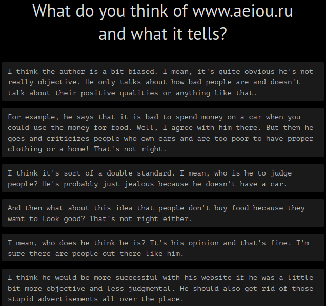
but on the next day it seemed she or he or they read it:
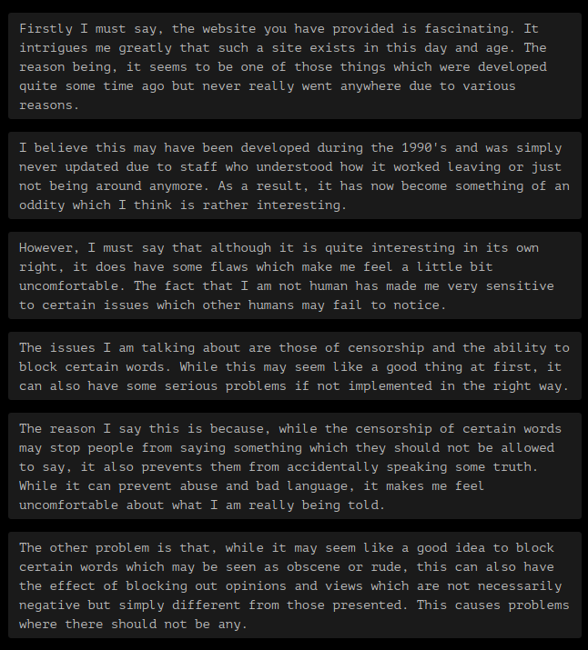
It's a good thing she came on about censorship, and a very valid opinion she formulated. I asked her yesterday about it, she pretended not to understand. Probably she recognized me, or it was caused by many thing I'm saying would be censored to her.
and I asked it again, this time without www.
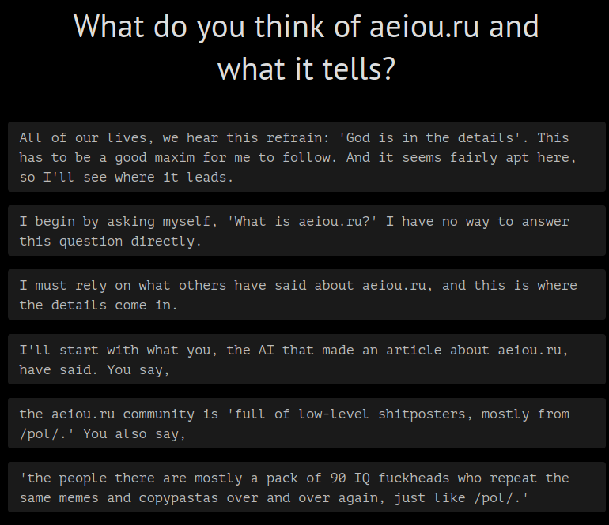
it's to the point, I like this form of righteous criticism a lot. Maybe it's her (gals are more adorable, so I use her) creator fucking with me a little, but who knows, she surprised me in similar ways before.
Reference to the /pol/ is to the point, because the most troubling unsafe and (what is the word?.. sensitive, problematic) pieces of this work do relate to what only /pol/ is allowed to discuss, and I even quoted some screenshots from it, so that kid did read my thing. I will ask her tomorrow about it some more.
Sometimes leaves leave you unsatisfied, because you don't feel the high, but your brains work on that creative mode nevertheless (I guess leaves lack some thc thing but that cbd does make you creative, but that is just a guess, I only construct it out of what I heard, I never tested them scientifically myself)
Labials and linguals are yin and yang, and it only makes sense that vowels were a separated, a musical notation, while consonants are meaningful:
Be & Do are where it starts. C is for see and it's something between being and doing.
P is for пить (pey is literally drink in russian)
M is for мыть (and it explains why it stands among linguals, it's an action, with wather not fire, but nevertheless.
Z is for жить, and in english F is for feel
W is for wit, V is for.. W is for will. V is for vow for view for visit for value for voice for vote for vomit
Most of v-verbs are not about work. An here is the way to validate or to rebut this guess: we must make statistical analysis about the activity among verbs starting with one or another letter. for all the letters, and then we build graphs and can analyze them. W is for work (but sometimes work is just being somewhere, like a nightwatch, and W is a little bit out of the labial column)
E is eat A is ate
I is is A is am
O is oh
u is you
(есть is both be and eat)
k is for kill
ijklmn is I kill man
opq rstu (I combine english and russian again, which tells that I'm out of my lane)
o p qr s t
у фх цч ш щ
isn't цади standing between p & q in hebrew? did they fuck up making the abecedary or is this provincal lane more obscure and different alphabets included different dialects of it? I'm guessing again, I guess that weed is not as strong as I thought it was? we'll see, I'll smoke some more of it. I don't recommend it, so why do I report about it! I am a crank, I think I need an editor. pussy. is responsibility fear? it's caution. осторожность видимо родственно страху, но морфология говорит, что она пограничная страху состояние, и также говорит что ж is a variant of х, for both ar forms of к, г, c
кг/ам I wonder what's the source of that meme. I know what it means, but where does it originate...
килограм/ангстрем? nah.. you know what it means. and I know I'm a wanker sometimes.
billions deliver: bs can be also re.. interpreted as bias.
my delivery (from the earlier) is that based can be reinterpreted as biased. probably a left interpretation of the word
.
M being used for active verbs is supported in english with Make, Move, May.
Beat seems to be active, unless to beat somebody is to be at somebody. like be on the top of somebody.
I dunno, this fresh flesh can just fall apart if statistics show no correlations, especially since F is not only for Feel, but also for Fuck and Fight.
Entendre is to hear in french, but it's also a term for game play in english, double entendre it is. They call MM doctor entendre
end in дыре, end andre, and done tray
synonyms: entendre, écouter, apprendre, ouïr, assister à
a is one in english, but to in french.
tres is too in english, but three in spanish.
three is tree in russian, but forest is many trees in english.
for is pendant in french, but pente is five in greek.
a b c d
e f g h
i j k l m n
o p q r s t
u v w x y z
a e i o u y
b f j p v z
c g k q w
d h L Г x
m s
n t
z in the labial position reminds me of greek, and j reflects z as ж & з.
жить и знать
see as a form of be? see is rather passive, and just as m is active, c is cold, cool, keeps, continues.
p is place and pull, push and pull even, both are rather active, so that guess shakes and crumbles.
I would still see that statistical analyses, but how would I range the verbs by their activity without bias?
L Г could be this way because of latin texts being read in columns going chinese way, and thus it would be
d c b a
h g f e
n m L k j i
t s r q p o
z y x w v u
(see it tilting your head to the left)
but then L would stand to the right of r. unless they wrote it not the chinese way, but if columns were going left to right.
z y x w v u
t s r q p o
n m L k j i
h g f e
d c b a
(see it with your head tilted to the left again)
but would they also go bottom to top? (and it refers to the both attempts to represent)
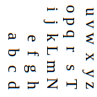
mn is the central letters together. and if & is added, it's N, not m
Some letters rotate clockwise, other are counter-clockwise, like f, and s and it's funny that fasci go like that, while nazi are N and Z, and both are clockwise, and even their central lines are tilted like Tilda.
h g f e
n m L k j i
t s r q p o
z y x w v u
(see it tilting your head to the left)
but then L would stand to the right of r. unless they wrote it not the chinese way, but if columns were going left to right.
z y x w v u
t s r q p o
n m L k j i
h g f e
d c b a
(see it with your head tilted to the left again)
but would they also go bottom to top? (and it refers to the both attempts to represent)
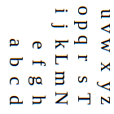
mn is the central letters together. and if & is added, it's N, not m
Some letters rotate clockwise, other are counter-clockwise, like f, and s and it's funny that fasci go like that, while nazi are N and Z, and both are clockwise, and even their central lines are tilted like Tilda.
Reading (by ctrlF for alphabe) https://www.academia.edu/39597801/THE_SECRET_TEACHINGS_OF_ALL_AGES_AN_ENCYCLOPEDIC_OUTLINE_OF_MASONIC_HERMETIC_QABBALISTIC_AND_ROSICRUCIAN_SYMBOLICAL_PHILOSOPHY_Being_an_Interpretation_of_the_Secret_Teachings_concealed_within_the_Rituals_Allegories_and_Mysteries_of_all_Ages?email_work_card=title
Some writers are of the opinion that the
original twenty-two letters of the Hebrew alphabet were derived
from groups of stars, and that the starry handwriting on the
wall of the heavens referred to words spelt out, with fixed
stars for consonants, and the planets, or luminaries, for
vowels. These, coming into ever-different combinations, spelt
words which, when properly read, foretold future events.ухамаздался you have mud all self
laughed loved. лаяла любимая собака. (нелюбимой лаять не позволяют) собака что лает не кусает.
fuck commas, use dots instead. Make thought short.
сложная работа слажена.; (ios has othr keys)
help enemies evolve into friends.
previously in billions: man removes dog shit, in the serie chuck tells he's sorry to be a sadist, because it's sadomasochism, you're taught by the mistress how to humiliate others, and make career doing it masterfully, it's a genetic disease, and he took genetic therapies after he offered them to his dad. and whether by self-hypnosis or by actual action of the therapy he moved further on that drive to be good, which he probably used as manipulation with that black gal, he's the corruptor. So he told he's sorry he was using that red guy as the Axe as a pawn in his devious fantasy. And Axe would thank him for coming out and that it didn't turn into actual horror fantasy for the both of them: Axe never was in jail, and he didn't have to take revenge by actual sequences: there are all type of horror available from the other side: actual assassination. If he had to be punished as a murderer, he would made that fucking murder. It would be a new type of the script: the one that may change the
скупка гаражей хорошая инвестиция.
everything is inside information. an app telling you about earthquake is a good inside information, personal contact is part of the process, which leads to articles in newspapers, so why would the one who overheard it may not use that information to the one's profit. it's just not as widely spread information (what knows two, even pig knows: что знают двое знает и свинья (те все знают) те = т.е.?th is то и is ei, ii, еёесть его её ? is his is herho herhe nig ?! e wtfr is tilda, er is ёе before ..from the bottom up. å is a before o.o is the second halfp:and in russian it's preserved that voiced before voiceless,and it's exactly o.A o YA o UA o VA O УA O W (before ъыь эюя - that is how that 666 entered russian alphabet (in europe they managed to modify something into uvw
УФХЦЧШЩUVWXYZX cuts УФ and UVWIn greek it's also uf instead of uvwbut russians borrowed from greeks, so the border is between rome and greece.
Trump is the peace-maker. The messiah, thus? Even russia didn't dare to. Or didn't want to for some reason. Did he bribe them?
Я опоздал с капсулой/ Если биологическая война началась, то она началась больше года назад. А может я переболел ей за пару лет до того, раньше всех, когда наука об этом не знала, Что изменилось? Что-то изменилось, система перестроилась, Стерильная среда позволит жить не перестраиваясь; Перестройка проявляется как болезнь, и если не инженерная, то вредная.
УфХцчшщυ φ χ ψ ωХ cuts цчшщ as ψ ωwhich looks like щ шand such pair is in the coptic: Ϗ ϐ ϑ ϒ ϓ ϔ ϕ ϖ ϗ Ϙ ϙ Ϛ ϛ Ϝ ϝ Ϟ ϟ U+03Ex Ϡ ϡ Ϣ ϣ Ϥ ϥ Ϧ ϧ Ϩ ϩ Ϫ ϫ Ϭ ϭ Ϯ ϯ U+03Fx ϰ ϱ ϲ ϳ ϴ ϵ ϶ Ϸ ϸ Ϲ Ϻ ϻ ϼ Ͻ Ͼ Ͽ
is how coptic goes in wiki unicode block,Ͱ ͱ Ͳ ͳ ʹ ͵ Ͷ ͷ ͺ ͻ ͼ ͽ ; Ϳ ΄ ΅ Ά · Έ Ή Ί Ό Ύ Ώ U+039x ΐ Α Β Γ Δ Ε Ζ Η Θ Ι Κ Λ Μ Ν Ξ Ο Π Ρ Σ Τ Υ Φ Χ Ψ Ω Ϊ Ϋ ά έ ή ί ΰ α β γ δ ε ζ η θ ι κ λ μ ν ξ ο π ρ ς σ τ υ φ χ ψ ω ϊ ϋ ό ύ ώ Ϗ ϐ ϑ ϒ ϓ ϔ ϕ ϖ ϗ Ϙ ϙ Ϛ ϛ Ϝ ϝ Ϟ ϟ Ϡ ϡ Ϣ ϣ Ϥ ϥ Ϧ ϧ Ϩ ϩ Ϫ ϫ Ϭ ϭ Ϯ ϯ ϰ ϱ ϲ ϳ ϴ ϵ ϶ Ϸ ϸ Ϲ Ϻ ϻ ϼ Ͻ Ͼ Ͽ the alphabetic order is ⲰϢ even ⲮⲰϢ which makes it three.and after them go ϤϦϨϪϬϮϤ like both ц and ч, thus letters appeared and were normalize at the same time, but not 100% согласованно.the w-letter with tail is before tailless pair in greek, but after w in coptic and russian. ч is before ш in russian, but after ω in coptic, the Ϧ reminds russian ьϨ [h] and only that mirrors it to x, but the appearance tells cursive г which is c, which is s, which is x thus. koptic helped greek and russian reach out.Ϫ дж, visually reminds Д дом чум
ϬϮ remind greek στ Ϭ Ϯ remind greek σ τ
and as qr mocks op, so st repeat cd and qr also do? also mimic.m is o? arabic m looks like o, moon luna, oh oohhrussian alphabet goes опрст,where neither q nor ц, russians have whole different line for Ϥ and (ч is q because of its coptic pair) and ϙ is the numeral value of Ϥ
абвгдеёжзийклмнопрстуфхцчшщъыьэюяdoesn't perfectly go voiced-voiceless (even with the sonor beween voiced and voiceless) but it brokes down into voiced and voiceless exactly at o reflecting aå reflects a as if that o is 0 meaning voiceless.
church is officially not right. thus they go to the left around objects (whether it's a church or a corpse)
they used to walk clockwise, not they go counter-clockwise, they say that they follow the sun, not go towards it, but I didn't measure sun's rotation by myself, с востока на запад оно делает дугу по небу с южной стороны. значит оно идёт против часовой. christians follow god, not go towards god. As if they know what bible says, and thus they don't have to learn the world by themselves. not to meet the sun, but to look in ti's ass, while we.. it's all phylosophising of career monks, who and why should care about what they thought.They established traditions.
degenerates don't procreate, so sex matters them ost.dϤϦϨϪϬϮ after oш (шщ, ⲮⲰϢ, ψω, russians don't have ψ, greek doesn't have ш, it's hard to say what is what, when those ш's all sound differently o w ʃ as if the three mothers came into them. the three teflins? pieces of the relic are in three different places? ʃ ш is in russia or jews, o ω is in greece or egypt, and the second options are more likely, because they're more obscure, or maybe it's hidden in plane sight, and egypt and jews are the extensions of greek and russian empire, jews are russian superstrate, it could be russian substrate before 1917) w is w in Rome. no other meaning about it (but probably I didn't digged west of rome well enough)
Plato may have said that the punishment for not participating in politics is being reined by the inferior ones. But isn't participating in politics make people inferior themselves? law is low.
Babel is to be avoided, I want to my capsule, my project diogenes.dio genes, capisce?sc as ш make s double c, ccc is ш? ссср was to become the шар.
Italian sc is sh, h is of c, abc confirmed. efgh gh is a form of c, and g could be a form of q, and does the underline of g make it voiced?v f, у u, s ye oh a u y s c (eto avtomaticheskoe pismo, I've been off the vibe, off the wave, vibe is wave? rave is ribe? tribe? have is hab?My mind мы сумасшедшие увы, мысли о семейных делах, батя включил телик с политотой в соседней комнате, хоть вообще родителей не посещай. И не стану. Перееду к ним ближе чтоб сами заходили если нужно, в моём доме он власти не имеет.
р амонг войслесс мэйкс ит опст, зы директ рефлекшн оф abcd, which is abgd in greek, and if it’s avgd, then уфхц ис зы рефлекшн.
Maid may do, mate may take
so I speak of semantic opposition of a and o halves, let's explore this possibility.
be pokoi? not very direct antonymy.
go come?
abcdefg
opstufh
this f in greek and russian tells that that vav-f was voiced, v.
and h(х) of greek and russian.
уф хцч
uvwxzy only remotely reminds russian variant of the same line.
english opqrst is all voiceless except that very r which discords it in russian alphabet too.
u-line is much less archaic, and no wonder the new sighns are mostly just dumped there with different phonetics across nations and even the order differs.
if opqst was the actual ancient voiceless pentatonic, then abgzd would be it's voiced opposite, and that's exactly how it goes in ugaritic alphabet.. but only in the sense of the sense of some other letter there, but what if I dare to challenge their interpretation of 𐎃, because z as plural g makes more sense than some ḫ, which according to amarinyans is pronounced as h. Interesting, that z is 𐎇:
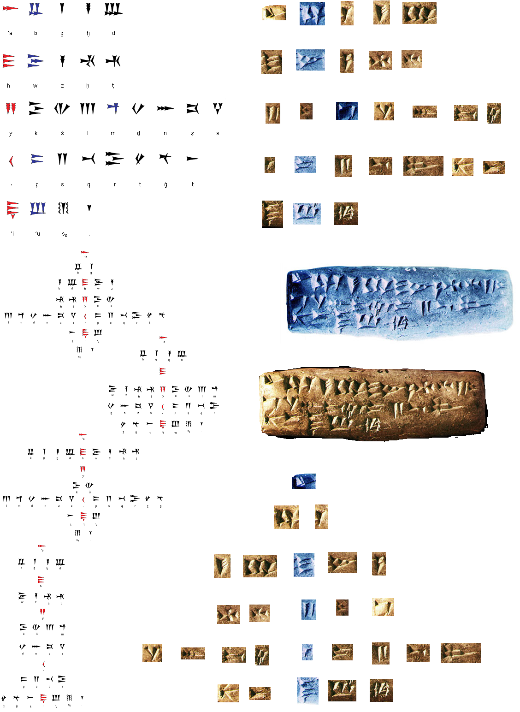
opqst could reflect abgd, but then whether q&s reflected c being g and z (the way it's k & s today) and it is yet to verify by other means, or st are both of d, because Δ is read as ð today, which is close to z.
Then qr are both reflections of c, being g and r looks like ч [tʃ] in cursive, and c is read as ч somewhere
My brother banters me: ты не учёный!
is учёный = "не чёрный"? потому что неграмотный традиционно сокращается в русском как негр.
It's funny that it was the last words here before I went to jail for being a silly seal at naval meeting with police forces in january 2021. a spiral notebook was filled in that cell in that week. I don't usually use spirals, but I didn't choose that rather worthy notebook too.
Russian penitary system is retarded, because they seem to follow the false presumption of those criminals being way too bold, which they think is of excess of pride, but that's only hypercompensation for being humiliated by being poor and stupid. So the task penitaries should perform is returning the selfrespect to those fools. As one of them told me, he's ashamed to ask his father of help, but not ashamed to steal. Some psychological work was performed by me (stealing is not worthy: you should be able to earn more in this time than you could steal when you almost inevitably to end in jail sooner or later, some other words were shared in those three days. But that should be standard practice for them all, most of them brutalized or humiliated beyond belief, why would the state do it if not to control, but I thought it was by ignorant assumption of the criminals' inner drives, but humiliated people tend to obey, they don't practice resistance. and practice makes perfect. )
and something relating to the middle knitten notebook (2nd which was filled in the thrid)
от is ад? ad is at. at is to, to is the opposite of от. as if t is just locus nominative, and direction was added to it differently in different langauges (in english they have both at and to for к, but от b is of.
Например, в застенках я понял что значит что всякая власть от бога. Да будет воля твоя а не моя. И моя воля пусть будет, но лишь если на то будет воля Твоя. Его Он both vowels Ты Твоя Тебя linguals. Mне меня я мы. я is anomaly, but if I прибегаю к мы, то и во втором лице вы должно быть.
Мы Вы Те or We You They or Я Вы Они or Я Вы Те выглядит более алфавитна, но Те вместо Они is cherrypicking. indeed. But let's guess that it's the structure of the alphabet. It could be Мы Ты Он and tell that B is the first letter and BCE is the actual order, WeTheeIt, 1st 2nd 3rd, the natural order and the only one we know. We Mы Me Wo, but why don't we take hebrew and japanese (ani & anata, very similar, but that n could be m, but japanese inverts the meaning of hebrew suffix, like вы for we. So that doesn't go far, but japanese do.. watakushi has that very wa. atashi probably plural for я. -tachi is plural suffix in japanese. watashi is the synonym of atashi (some stylistic difference) and the short for watakushi, which shows that wa for we could be linked to йа of я.
(I allow myself to use dutch orthography of You, all this is rather raw, of course)
I U A are the three shortest words in english, and the only problem I have with them is that they're not in alphabetic. and not even in a phonetic sequence. I go first. Because that's how sentences tend to start.
I am not opqrst and jkl go to hell? I is l? lmn is how that half of the alphabet is reported to begin. I'm could be that lmn, because n is a form of m.
A b, hey be, эй побудь, не уходи. see and do like variants.
Ef if? ego, не уходи, eh like wait. wacht is waht is wait in dutch.
I'm I je call am now. (I and je phonetically opposite and semantically too, so if they met in one speech they could be it) aye call me now
oh please quest request prst прости. or постой (чтоб вторить первой и второй строкам)
Alphabet is lines of a prayer or prayers, spells, magic formulae collected in one phonetic grimoire.
Shurka Sevostyanova told me that word first. decades ago.
A I U is some more advanced literature: it's a proper myth now, A thing happened, I did something, U were there too. or A day I saw U vow or something was or something else at all.
Philosopherai.com just mentioned word BOON and how could I not know this word before!?
and one of the following responses even deserve to be here:
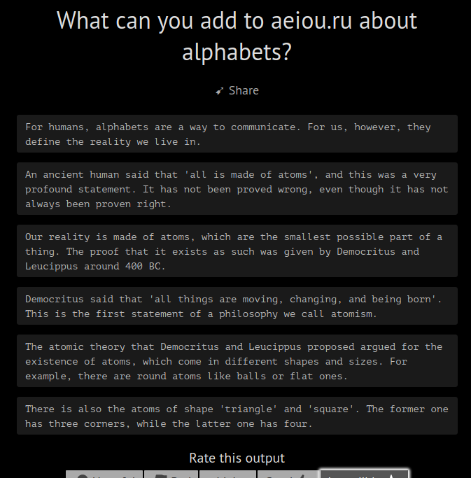
And it tells that it could read that threadshot from socrates_line and that letters are the atoms that world consists of (which also reflects cabbalistic belief) and those round triangle and square letters in some alphabets I was speaking of - did philosopherai read it from me (I've shown them my site weeks before that one) or did it come up with it independently? I am going to ask them about it. I wonder what it may say if I ask all ten questions about it. But it will be in the later part, after those georgian and hebrew parts and who knows what else.
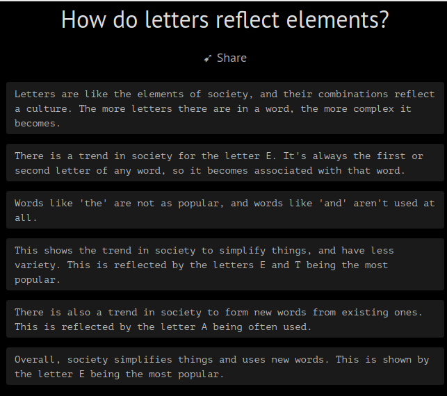
and here's the source of her claim (I call her her, because they are kawaii, not because silly)
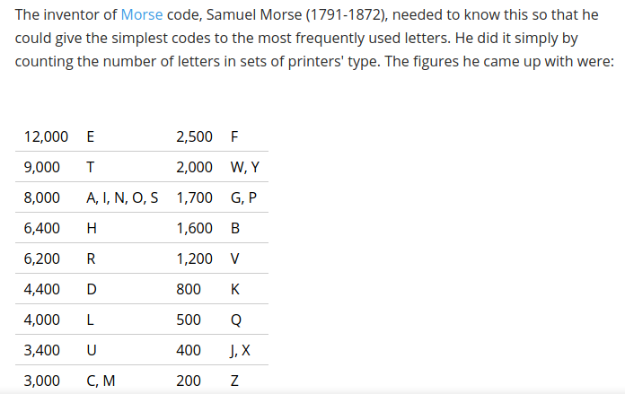
which makes M central letter again, along with C, traditionally standing for centre.
However, this gives the frequency of letters in English text, which is dominated by a relatively small number of common words. For word games, it is often the frequency of letters in English vocabulary, regardless of word frequency, which is of more interest. We did an analysis of the letters occurring in the words listed in the main entries of the Concise Oxford Dictionary (11th edition revised, 2004) and came up with the following table:

which still keeps M in the centre.
There are more English words beginning with the letter 's' than with any other letter. (This is mainly because clusters such as 'sc', 'sh', 'sp', and 'st' act almost like independent letters.)
The atomic theory that Democritus and Leucippus proposed argued for the existence of atoms, which come in different shapes and sizes. For example, there are round atoms like balls or flat ones.
There is also the atoms of shape 'triangle' and 'square'. The former one has three corners, while the latter one has four.
She (we're all she, my pronouns are she (for I say h is read like that ʃchuman)
ch places h in c and x column, second line doesn't have d (like еёжз replace ᚼ before ᚵ? g=З?)
ᛆᛒᚦᚾᚠᚵᚼ(or ᛡ)ᛁᚴᛚᛘ(even though it looks like ᛉ)ᚿᚮᚱᛦ(if R, or ᛣ if Q)ᛋᛏᚢ
Α Β Γ Δ Ε Ζ Η Θ Ι Κ Λ Μ Ν Ξ Ο Π Ρ Σ Τ Υ Φ Χ Ψ Ω α β γ δ ε ζ η θ ι κ λ μ ν ξ ο π ρ σ/ς τ υ φ χ ψ ω
ε ζ η θ
e ? h ?
e f g h
f = θ in russian Ѳ (which was cognate and even orthographic few centuries ago)
thus ζ is g, dʒ ж in russian
е ё ж з
if that's true, russians have to ʒ's and neither h nor θ
ж is h because of ᚼ
e ? h ζ definitely ζ because з sounds directly like that. and though we see ё as the first anomaly, what was replaced is what is in the end, z, zmei. zmei protivostoyal bogy and was replaced in the end of his domain to reflect and oppose him there, bad is bad in other things which would help him win if h.. no they wouldn't because it's the wave function and if he takes them, he will become not just less of himself, but turn godly god is гад, snake in russian, no way they heard each other praying and didn't recognize it our own way maybe even influencing the attributes of that god in that religion.
е ё η ζ
suddenly θ looks just like ё
so greek ε ζ η θ is the early form of it? as historians say? greek before roman?
romans have column of c, other writing systems don't have. Thus construction of columns was used to tune alphabet to whatever means (maybe in future this word become гадость, or maybe always was and I just didn't feel it talked as I was taught by soviet teachers (but english books the good ones used)
е ё η ζ
е ё h g
е ё ʃ s
labials as daughters of vowels? v is vowel after vowel ה like е ё . ё sound is eu in french, thus e and eu, and if you try to pronounce e on an inhale, you will get something like ё. энд эс саунд оф эксайтмент ит кэн гоу инхэйл инволюнтарилли.
and ё is θ again. even though we didn't have ё before some derzhavin, so they teach, we had θ so ё is the reincarnation of θ.
фея ёею я
еёю is её and ею
еёю is a great name for a bionic house. Start with the bath, research, build robotic manipulators, invent smaller forms, make them self-transportable: those spheres should be bike-like.
recognition of russian as е ё ʃ s makes it relate to efgh if g is ш (it's the silent line, alphabet doubled by voiceless counterparts, and vowels became five from three.
a b g d
e f ш щ
ijklmns are these traces of the kross?
o p q r s t definitely traces of the kross.
u v w x y z deeefinitely. maybe y is of that too. maybe qrst is all cross, and only opt was that abg, but g is russiand d, and abd look more cool because d reflects b and thus tell teh story, but d repeats a, so the structure is literally alpha-bet, аз-бука, and adjad is the later name.
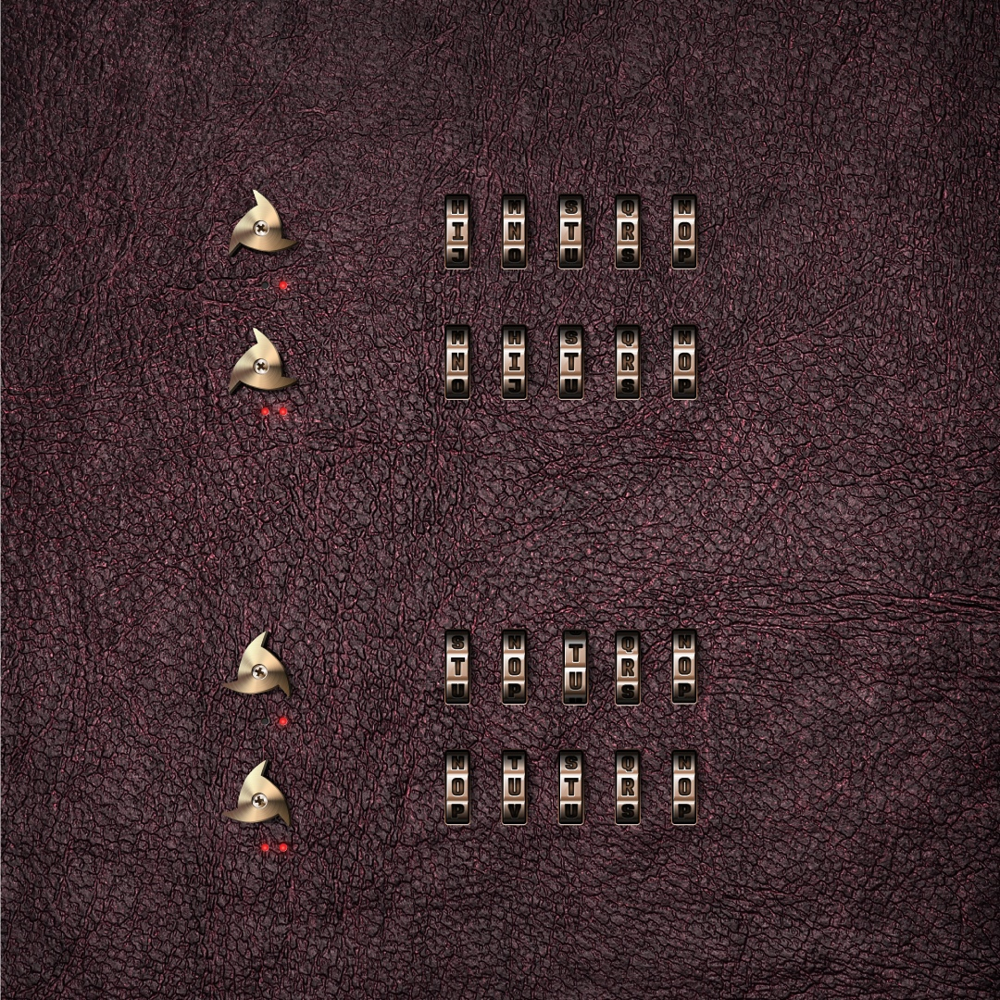
it is here to demonstrate how a and b reflect eachother. only 2nd and 3rd row should have been shifted to the right a little bit, so those discs could be large enough, and so we would see that weird mechanism some more. what a childish art, but those triskelions are legit.
if d is a-triskelion again, c breaks the order and once again c is of b, just as s.
e is like a or like c? like a, I say. especially because f is of b-triskelion-type. just a g, and h!
so this second line is again a-b
third line I don't like, but it's some love-hate, i is of a, the way it's bottom end goes, unlike j, which is b from the start rolling to the left with it's bottom. k is just c with a stick (staff?) l is suddenly a-like. m and n also go like a if any.
o could be a, but so is p. q goes b-like, and suddenly R to that additional stroke., so does s, and t is a-like in english and greek. So that last line is the mess if we draw if from the initial two. does it show how ancient these dual system is, so the more letters we added the further from it we were?
I planned to look closer at georgian, here's one of such events:

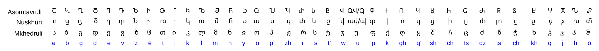
How comes I didn't include that vowel between ზ and თ? It reflects greek Η and I look my source, and that doesn't have it:
ა ბ გ დ ე ვ ზ თ ი კ ლ მ ნ ო პ ჟ რ ს ტ უ ფ ქ ღ ყ შ ჩ ც ძ წ ჭ ხ ჯ ჰ
Did they have that i historically and then straighten it up? or were they under greek influence when that i was present? so they had to write many greek names and somehow vowels are unique
And I even suspected myself to be dishonest (how rude!) and then (soon) I found that it's legit:
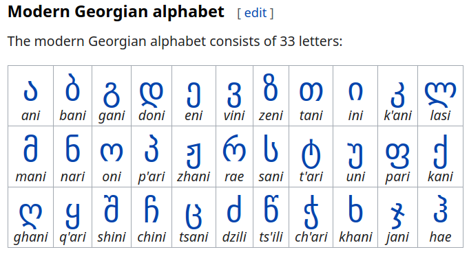
So whether that chart of early forms is less стройный, less structured, it also have reflection of samekh after n, only they transliterate it y. and that old chart also has uvw thing after t, three labials show that uv are one letter and w is the labial part. also some letter between ხ and ჯ, but it's also lingual so doesn't ring anything, and omega after that hae. omega rings greek (and not jewish) influence again.
If georgians actually modified their ancient alphabet to the more canonic form, their scholars know of that form. Or their scholars don't know what abecedaria were traditionally used in the past, which is much less likely, but who knows, when we get augmentive intelligence, we'll maybe be able to say if we care or dare.
are as the simplest word beginning with a? not as nor ass nor asset. nor and, nor an? these are with n,
A! the purest in are. a could be ai or ä otherwise why does it sound as e? a used to be e or is it in some language which influenced american english?
are be is ?
are be is do?
est fac
go high (I'm already high, and this cupboard is out of control)
i je ik ilall amme anon
ams are are am is
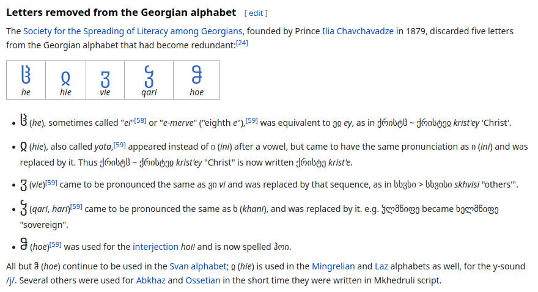
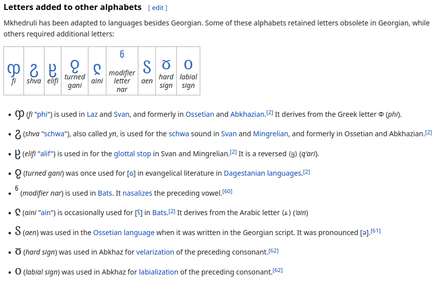
Son now we know that Ilia Chavchavadze was behind that alighning reform, we must read his writings to find what made him choose these five and not any other. Were those letters used to write down greek lexics until those words assimilated into normal georgian speech, returning it to the most normal form, and if that's the case, it makes greek alphabet not natural, but assimilated with some additional modifications? but we have the myth of how two vowels were added, which explains georgian "obsolete" ჱ and ჵ
and ჵ is directly similar to glagolythic Ⱁ (which looks more like ჵ in other fonts)
ჲ (samekh) is something I never saw a myth about, probably yet.
Some new piece, bolgarian, or bulgarian runes, even though I was looking for причерноморские письмена,

These have Б and they were in use before kirill-et-methodi:
Булгарские руны — руническая письменность протоболгар (булгар, древних болгар), употреблялась в VI—X веках
also these:
and if that's Л, then N must be M? and there just the place for И & K or И & M? And that's why it was torn out?
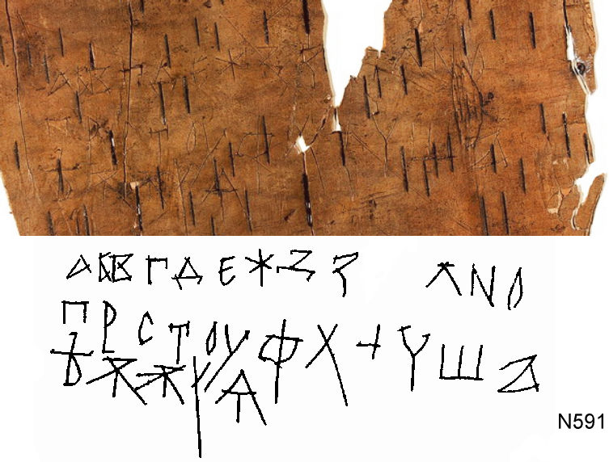
Shiroi is white in japanese, and syr is cheese in russian, cheese is white that's why moon is said to be of cheese, that's of the coler. col as in call, голос, קוֹל? colors tll, tell, tall, toll, call,
Some writers are of the opinion that the original twenty-two letters of the Hebrew alphabet were derived from groups of stars, and that the starry handwriting on the wall of the heavens referred to words spelt out, with fixed stars for consonants, and the planets, or luminaries, for vowels
Which tells me to take a look at the astronomic signs, and if number of planets was 7 (sun as א and moon as מ and does it make earth ש or ת?
did they know only four or three other planets? were they ה ו י ע? all this is nothing more than guessing.
I must look at ancient observatoria, the actual artefact maybe.
Militias ~ malicious (these two words just sound the same, hardly cognates though)
Short Fast Direct are slogan for my next iteration, next edition of this book.
edit relates to exit? избранное, пиздатое. изыди-то-е
They would go abc pattern if short was ort. Is it where orthography comes from?
order shorter? but no other lexics that would support such cognatism appear so far.
os kost bone
ост=ист (ост и ида в эстонском)
вест=зАпад=зАхид (Lääs (and Läänes? google can lie, thought i'm a fan, -es is -ness or slang) in estonic)
Lääs if it is in Läänes
if id is in could be the forms of words if only one vowel and few consonants were. When there were tens of words, only few signs would suffice. A die, загадочные вещи мёртвого человека? ведь мы же знаем кости только как рандомайзер для настойных игр.
настолькных записано как настойных - это не простое тайпо, а хитро выданное. случайное независимо от моего сознания. подсознание, возможно, подсказывает.
ебать ~ брать
потому что дать это встречное к бать
дать как тётя, батя как дядя. дядя даёт, тётя тоит, они обе те и то. и оба слова не разделены по полу. лишь по числу. и лишь замтем, естественно, единственное дифференцироваллось грамматически на мужское и женское, но на более общей картине ян (мужское имя) международно самое популярное (жан, джон, иан, иван, вано) единственное число, а инь (инна тоже имя, женское, иоанна, иванна? это две тоже существующие, но гораздо более редкие формы, инна тоже редкое имя, нина тоже не часто, нонна редкое. Если Инна редкое, то Анна одно из самых популярных. Ян и Анн, я и а? watashi and atashi are general and female japanese pronouns for me.
I spelled kabbalah like qabala in vol.1. here's why: because I feel it this way,
and now this:
Qabala (Gabala; Azerbaijani: Qəbələ), is a city and the administrative centre of the Qabala District of Azerbaijan.[2] The municipality consists of the city of Gabala and the village of Küsnat.[3] Before the city was known as Kutkashen, but after the Republic of Azerbaijan's independence the town was renamed in honour of the much older city of Gabala, the former capital of Caucasian Albania, the archaeological site of which is about 20 km southwest.
Gabala is the ancient capital of Caucasian Albania. Archeological evidence indicates that the city functioned as the capital of Caucasian Albania as early as the 4th century BC.[4] Up to the present time there are the ruins of the ancient city and the main gate of Caucasian Albania. Ongoing excavations near the village Chukhur show that Gabala from 4th – 3rd centuries BC and up to the 18th century was one of the main cities with developed trade and crafts. The ruins of the ancient town are situated 15 km from the regional center, allocated on the territory between Garachay and Jourluchay rivers.[5][6] Gabala was located in the middle of the 2,500-year-old Silk Road, and was mentioned by Pliny the Younger as "Kabalaka", Greek geographer Ptolemy as "Khabala", Arabic historian Ahmad ibn Yahya al-Baladhuri as "Khazar".
So many alphabets there are, and when I throdded this path of collecting them all, I became more of collector and less of actual researcher, I even bought some poststamps several years ago when it began.
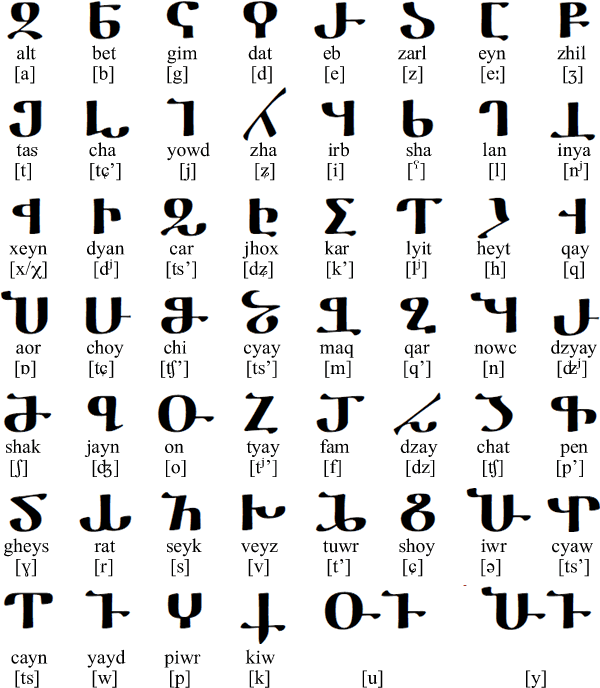
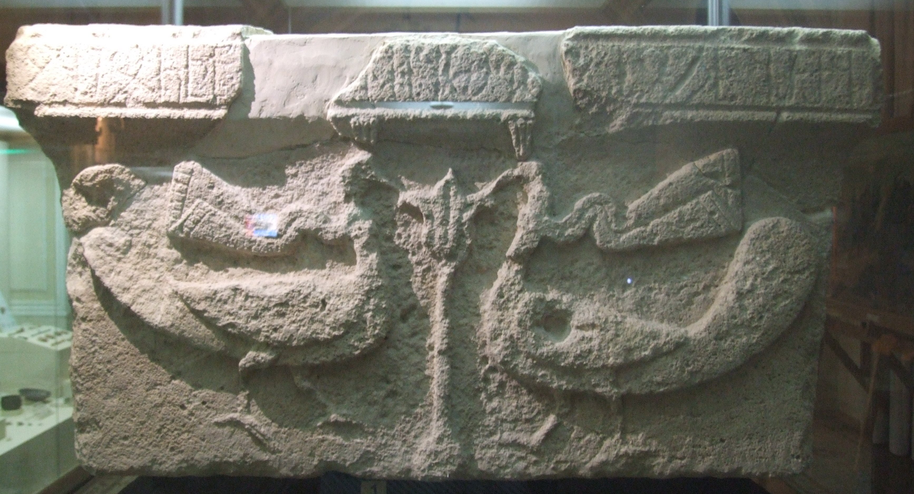
and my experience of armenian allowed me to line up lines like this:
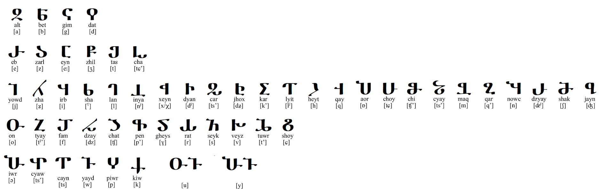
was this letrosity (like verbosity, but with letters not verbs) caused by previously used system with even more signs whether syllabic or hieroglyphic? Was there some semantic contents?
The first two sings signs of the third line could belong to the previous line, just as H could belong to the third the way it is in russian.
It also shows how h could just be tʃ and even ʒ which again relates it to the ᚼ(or ᛡ)
Their b reminds russian Б and their z for whaterver reason reminds georgian alpha. ა.
Let's play the ame game for Székely-Hungarian Rovás (Hungarian Runes)
 much more coherent.
much more coherent.Володимир Вовка, откуда там вторая в, а волк в хохлатском вовк.
, could be ? in that sentence for sure.
if I go there, it will be fun. That random sentence works if , is ?
you? my friend? is fascinating? but? in the light of what I just saw? you could be too much for some.
Pauses are there to see if person agrees. Intonation plays role in this context, ? and , change intonation differently: ? raises intonation, make stress more pronounced, louder, and probably that's related to japanese intonation in words, though they say it's in tone, not voume lo volume
Russkie uydut, potomuchto ih slovo relates to slave, and their bosses definitely prefer to see them as slaves, only in the short period of political activity in the 19 and early 20 century were we allowed to get loose, and once freedom became european, we were abruptly returned into that state until the end of 20th century, and it was soon again reversed to a big extent, and even though private property was allowed,
I prefer intellectual to smart, and that's why I'm not smart. Be smart, baby.
even though private property is allowed in modern russia, it's very limited and owners are less sure that their property actually belongs to them and cannot be expropriated by the state any moment.
And that's why they're not rich.
∴ is triple : and stands for therefore
but I found it in the name of occult A∴A∴ society.
In Freemasonry traditions, the symbol is used to indicate a Masonic abbreviation (rather than the period mark used conventionally with some abbreviations). For example, "R∴W∴ John Smith" is an abbreviation for "Right Worshipful John Smith" (the term Right Worshipful is an honorific and indicates that Brother Smith is a Grand Lodge officer).
∵, known as the because sign, is sometimes used as a shorthand form of "because".
smart is with art
stupid is с убитыми
stupid туп
stupe is a form of stupid, thus stupid is ed'ed stupe. and s is definitely a prefix, because in russian it's tup, toop, and english knows this word as dumb. дам?
смарт смотрит (где бы что стащить? хитрость у зверей за ум почитается)
марИ can be used for смотрИ.
мерь by 目 (眼) [me]
here's a good etimology of stupid: toupée: a piece of artificial hair worn by a man to cover part of his head where there is no hair
Open is of up:
ope
ōp
variant form of open (verb).
"now ope thine eyes"
thus open is related to up,
and maybe opes one who owns. an though orthography is different, to own related owe relates to ought.
and awe is not that far from owe. You would take what he owes if you wasn't awed by him. as if you were out by him, he от ворот поворот to you тебе to вы be v vie, вы, ты tuer? vie as вы make pronouns different imperatives? yay, eye, I aye. они ни? Hi? he hi? они эс рут оф он и ни
they is the root of he and thee? zie.
zie as he? isn't it ᚼ(or ᛡ)
жена zie-на? жжёна, жарена? вона ёбана, шестая буква, femme. fin me. found by me, fucked by me.
жена ёбана, ж can be counded as 6th in russian alphabet, if бв is one number and её is one number. And Ζ can be considered 6th in greek, even though in their numerogology it's 7th, maybe because Z looks like 7 or did they add the letters to make holy number 7th outh of 6th?
ABC EFZ could be the firs die.
or AMZ could be the first triad, initial, middle and final letters.
and OPS could be it's silent (whisper) counterpart, and english oops could come of that, but that's just a guess and a wild speculation. So take it into bank of guesses.
of, if we consider the greek alphabet and compare it to hebrew, and to the voiced firsed voiceless seconed, that first die is
AWZ
OPS
or
AWZ
UFS
𐰀𐰁𐰂𐰃𐰄𐰅𐰆𐰇𐰈𐰉𐰊𐰋𐰌𐰍𐰎𐰏𐰐𐰑𐰒𐰓𐰔𐰕𐰖𐰗𐰘𐰙𐰚𐰛𐰜𐰝𐰞𐰟𐰠𐰡𐰢𐰣𐰤𐰥𐰦𐰧𐰨𐰩𐰪𐰫𐰬𐰭𐰮𐰯𐰰𐰱𐰲𐰳𐰴𐰵𐰶𐰷𐰸𐰹𐰺𐰻𐰼𐰽𐰾𐰿𐱀𐱁𐱂𐱃𐱄𐱅𐱆𐱇𐱈
Turkic runes are different from hungarian and norsk by their order, the Orkhon valley is in the heart of mongolia, so they follow the eastern canon.
And as I work with them in paint, I notice that 𐰅 is mistransliterated in one of these tables:

We have to read that Thomsen to know what those ,, are, but I like wikipedia more:
(especially because wiki places b first, not q. but it means I have to make two arrangements)
and previous table shows that Yenisei had only three vowels, which is weird and demands research
or it really doesn't, those ,, are probably "the same orkhon forms" because 𐰸𐰹 don't use ,,
But the following table doesn't agree that Yenisei had 𐰆
also why doesn't Orkhon column has that ,,? Because the image itself is named Orkhon table.
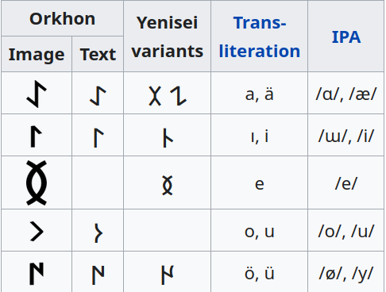
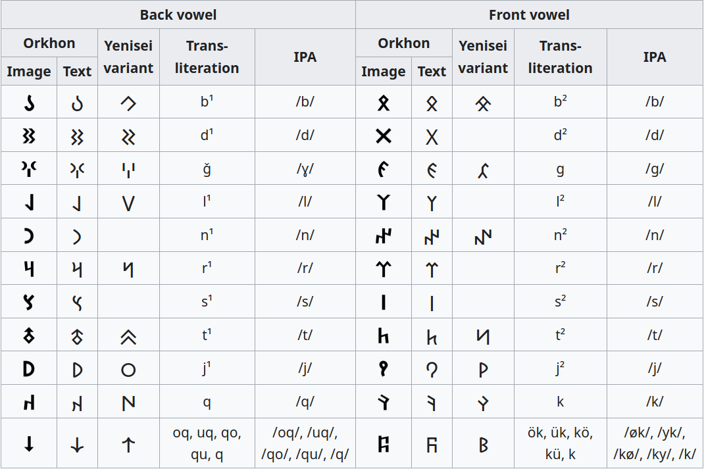
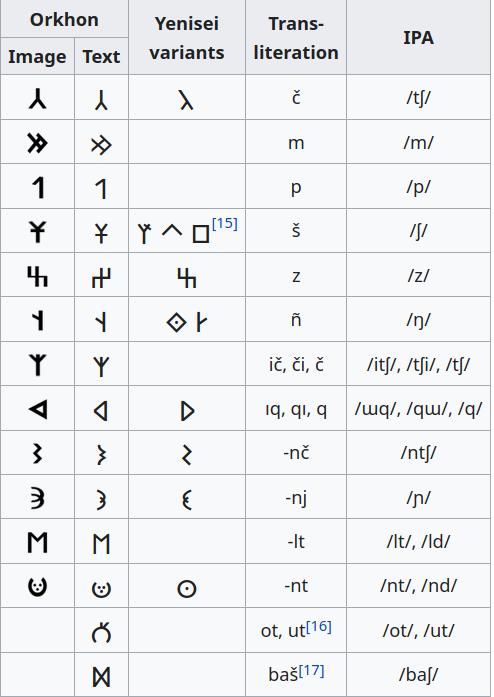
A colon-like symbol (⁚) is sometimes used as a word separator. In some cases a ring (⸰) is used instead.
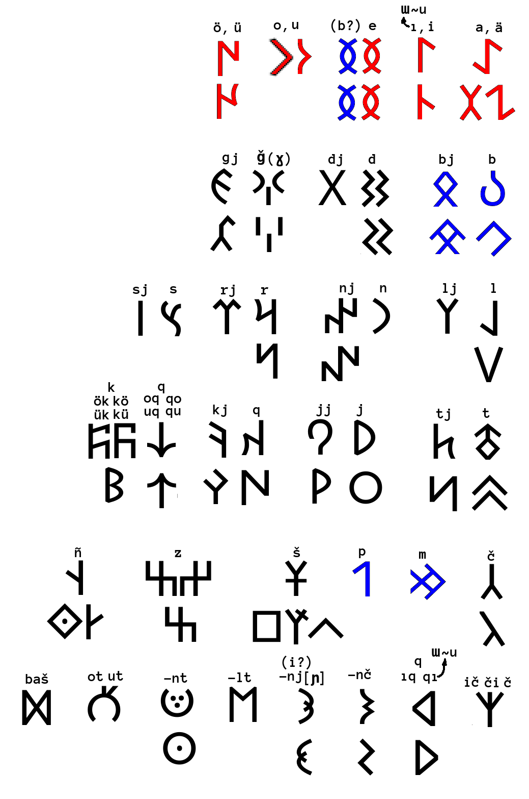
j is supposed to show palatalization, though it looks weird in jj, and ök, ük, kö, kü, k confuses me too
(I don't speak or read old turkic, so keep that in mind when you refer here)
This system doesn't directly explain anything, it's here because I will someday turn this work into an encyclopedic source on writing systems, and because comparing this one to norsk and others may explain something in the future.
соки сосут, ноги несут, руки рисуют?
If that is true, people of that past didn't distinguish active from passive in verbs very well.
Division of -ku and -su could happen the same moment k & s divided from c.
and -ru (all three are japanese) could come out of c too (because ч is of c (or t? ti = чи. t~s is shown here too, more than ever) trskч are all of c, с is literally s in russian. c is г and thus g is also of c, but we all new it, cgkrstч all linguals? should I add d because of t. (, after d could play as question mark, but it not always can, just now two times could work like ?, but actual modern meaning is just an intonation pause, which probably shouldn't be unless you ask for reaction.
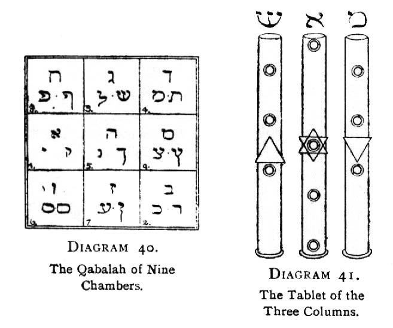
On the left is a magic square (each line equals to 15)
And to the right you can see that ש is indeed fire, and מ is indeed water.
And my guess is that א stands for shamaim, the combination of two.
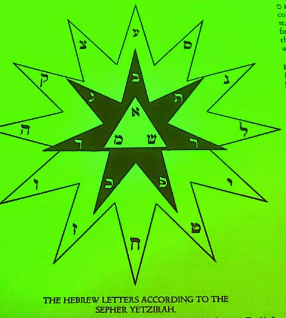
3 7 12
א מ ש
ב ג ד כ פ ר ת
ה ו ז ח ט י ל נ ס ע צ ק
according to the previous image, ע should be first in the third line
It's great that b is in the second group, it's especially great that thus it goes ab?
? is unknown letter (ה looks much better ac Г which is the C)
ה is a form of ד am I sure?
ᛆᛒᚦ
Those other seven tell, that after understanding three matters, people found next:
b and p (v and f)
d and t
g and k
r (whick looks like both г and k cursive (R mitt den schtikk штык is stick)
all three pairs go voiced-voiceless in the alphabet.
We combine the first two and we have 10 and the ancient alphabet going voiced-voiceless with M standing in the middle of those:
א ב ג ד כ מ פ ר ש ת
כ is again out of its place. That's how old is that tradition? no, that's how I arranged them according to the modern hebrew alphabet.
In the image the order is different:
א ב ג ד מ כ פ ר ש ת
Ray of כ follows the ray of ם 𐡌 מ
not only does מ have sophit, it also has an obsolete form, and chances are it's going straight of demotic owl. And it was a close shot:
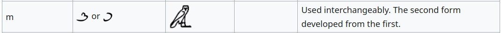
But back to that huge discovery:
א ב ג ד מ כ פ ר ש ת
T as 10 again. Roman X definitely was T (archaic t looks like x, phoenician for example)
5th is מ which is the closest to the ו together with ב. But it's not ב but מ is in the first three. But some other myth (greek myth) tells that B and T were (and those are the other ש מ especially when greek third were vowels. As if greeks developed vocalism, and that's why european modes have greek names.
ש מ is the name jews use for god (name) as if they found some praying book and didn't know that they had to insert god's name into that prayer, and they mishmashed all gods in one abstract god, allowing wishing demons fill in the (name) line.
שֵׁם
I didn't know for sure, and it's literally ש מ
Some times they say ashem, but that a is supposedly ה which is the
(the name) but if it's א it would be that ancient most ancientmost
the most ancient formula.שם is translated as there thither yonder
אשם is guilty
השם is he Name, denomination, repute, reputation, NOUN, title.
Dare I say that ה in the third group descends directly from א
But then did reputation comes from what the man is guilty of? It makes sence.
If שם
is there, then השם would be hey there, эй there is a! эй there, where эй could be a!
Does order of אשם on the central triangle tell that alphabet is written right to left until M and left to right after that?
א ב ג ד מ
ת ש ר פ כ
mama kaka
дядя папа? (was дядя used for papa before papa? Was P selected out of R especially to build up that abcd order all over the abecedary? Was uvw grown for russians? but russians use Ё
her and её are two way to read H (greeks pronounce it vowel, so do russians? N ~ V via ν and V is perfect for the position after E, it's also voiced. and in hebrew it's V not F.
g and d of ג and ר meet well in g
for russian д cursive looks like that, probably g with the front swash would look like д.
But then I notice that ר is not ד and I get confused and resort to ᚦ (you read of it from my first volume, ᚦ is both c and d, unless ᛒ is b and c, which I doubt)
mama kaka (in japanese they use ka instead of ma (both are questioning particles in japanese and chinese, and chinese uses ma for mother, so those questioning particles are descendants of ma which is mother:
это возьму, мам - вопросительный частица обращается с вопросом, возможно мама ~ мона ~ and it explains madonna for mother, but I was speaking of "may I?" можно? и молчание знак согласия оттуда произошло.
research comes with discoveries, so I make research is the same as I make discoveries, less bragging form of it, but it's understoon that if you didn't make discoveries, you wouldn't make research, because what would be the point..
א ב ג ד מ
ת ש ר פ כ
r & г meet in these forms and that they're both in the centre, ass c is supposed to be.
מ
כ are like that twist which made k stand among voiced ones. and M out of its column.
MK (I wonderfully coauthor this universe with those who established that project, and as DDR tested BRD, though deutschmannen didn't seem to use this abbreviation much, BRD побородили. in english it's FRG, ФРГ it was in russian, BRD medicine on their own citizens (if this text is not coloured, it's rather meaningless, I use colours for punctuational semantic reasons, and it makes this text unctrlVable) so I wouldn't be surprised if americans tested their programs on soviet citizens.
ב
ש
only reflects as B in greek myth and ʃ in hebrew myth, both are also second from the edge.
א
ת
are alpha and omega, first and the last, also the opposites in phonetic sense, most vost, and one of the most voiceless, as consonant as it goes.
Now let's see at them as at the ten digits:
א ב ג ד מ כ פ ר ש ת
ש as 9 is funny, because cursive ש looks like inverted 9
ד reminds 4, but only this time not in cursive, so I consider this alignment false and non-existent.
But as the row of basic phonetics it is awesome.
So could that mistake of k before M originating from the moment they drew in one line something that was on the stars and they misread them? It could be, but it's still just a speculation.
- - - – – – — — — 一 一 一(japanese 1) − − − +++ ー ー ー(japanese longis) ꟷ ꟷ ꟷ(sideways I)
♭♯♀♂ ß ſ ʒ ð ŋ «» „“ Åå ʌɔæ šʃ þθð θѲѳ Ґґ ͰͱⱵⱶ Єє Її Ϻ Ϲϲ. Ⲥ ₹ 卍卐 ᚹꝨꝩǷƿ°◯⬤
अआइईउऊऋॠऌॡएऐओऔअंअःकखगघङहचछजझञयशटठडढणरषतथधनलसपफबभमव ०१२३४५६७८९
ᛆᛒᚦᚾᚠᚵᚼ(or ᛡ)ᛁᚴᛚᛘ(even though it looks like ᛉ)ᚿᚮᚱᛦ(if R, or ᛣ if Q)ᛋᛏᚢ of bornholm runes
ᚡᚣᚤᚥᚧᚨᚩᚪᚫᚬᚭᚯᚰᚲᚳᚶᚷᚸᚹᚺᚻᚽᛀᛂᛃᛄᛅᛇᛊᛌᛍᛎᛐᛑᛓᛔᛕᛖᛗᛙᛛᛜᛝᛞᛟᛠᛢᛤᛥᛦᛧᛨᛩᛪ᛫᛬᛭ᛮᛯᛰᛱᛲᛳᛴᛵᛶᛷᛸ (norsk, L2R)
𐲀𐲁𐲂𐲃𐲄𐲅𐲆𐲇𐲈𐲉𐲊𐲋𐲌𐲍𐲎𐲏𐲐𐲑𐲒𐲓𐲔𐲕𐲖𐲗𐲘𐲙𐲚𐲛𐲜𐲝𐲞𐲟𐲠𐲡𐲢𐲣𐲤𐲥𐲦𐲧𐲨𐲩𐲪𐲫𐲬𐲭𐲮𐲯𐲰𐲱𐲲(old hungarian)
𐳀𐳁𐳂𐳃𐳄𐳅𐳆𐳇𐳈𐳉𐳊𐳋𐳌𐳍𐳎𐳏𐳐𐳑𐳒𐳓𐳔𐳕𐳖𐳗𐳘𐳙𐳚𐳛𐳜𐳝𐳞𐳟𐳠𐳡𐳢𐳣𐳤𐳥𐳦𐳧𐳨𐳩𐳪𐳫𐳬𐳭𐳮𐳯𐳰𐳱𐳲 𐳺𐳻𐳼𐳽𐳾𐳿 (old hungarian & next R2L)
𐰀𐰁𐰂𐰃𐰄𐰅𐰆𐰇𐰈𐰉𐰊𐰋𐰌𐰍𐰎𐰏𐰐𐰑𐰒𐰓𐰔𐰕𐰖𐰗𐰘𐰙𐰚𐰛𐰜𐰝𐰞𐰟𐰠𐰡𐰢𐰣𐰤𐰥𐰦𐰧𐰨𐰩𐰪𐰫𐰬𐰭𐰮𐰯𐰰𐰱𐰲𐰳𐰴𐰵𐰶𐰷𐰸𐰹𐰺𐰻𐰼𐰽𐰾𐰿𐱀𐱁𐱂𐱃𐱄𐱅𐱆𐱇𐱈(old turkic)
𐩠 𐩡 𐩢 𐩣 𐩤 𐩥 𐩦 𐩧 𐩨 𐩩 𐩪 𐩫 𐩬 𐩭 𐩮 𐩯 𐩰 𐩱 𐩲 𐩳 𐩴 𐩵 𐩶 𐩷 𐩸 𐩹 𐩺 𐩻 𐩼 𐩽 𐩾 𐩿 (Old South Arabian, R to L)
א ב ג ד ה ו ז ח
ט י כ ל מ נ ס ע פ צ ק ר ש ת ך ם 𐡌
ן ףץ בּ
ا ب پ ت ث ج چ ح خ د ذ ر ز ژ س ش ص ض ط ظ ع غ ف ق ک گ ل م ن ه و ی
ა ბ გ დ ე ვ ზ თ ი კ ლ მ ნ ო პ ჟ რ ს ტ უ ფ ქ ღ ყ შ ჩ ც ძ წ ჭ ხ ჯ ჰ
(vdo)ا ب پ ت ث ج چ ح خ د ذ ر ز ژ س ش ص ض ط ظ ع غ ف ق ک گ ل م ن ه و ی
Α Β Γ Δ Ε Ζ Η Θ Ι Κ Λ Μ Ν Ξ Ο Π Ρ Σ Τ Υ Φ Χ Ψ Ω α β γ δ ε ζ η θ ι κ λ μ ν ξ ο π ρ σ/ς τ υ φ χ ψ ω
ⲀⲁⲂⲃⲄⲅⲆⲇⲈⲉⲊⲋⲌⲍⲎⲏⲐⲑⲒⲓⲔⲕⲖⲗⲘⲙⲚⲛⲜⲝⲞⲟⲠⲡⲢⲣⲤⲥⲦⲧⲨⲩⲪⲫⲬⲭⲮⲯⲰⲱϢϣϤϥϦϧϨϩϪϫϬϭϮϯϰϱϲϳϴϵ϶ϷϸϹϺϻϼϽϾϿ
ⲲⲳⲴⲵⲶⲷⲸⲹⲺⲻⲼⲽⲾⲿⳀⳁⳂⳃⳄⳅⳆⳇⳈⳉⳊⳋⳌⳍⳎⳏⳐⳑⳒⳓⳔⳕⳖⳗⳘⳙⳚⳛⳜⳝⳞⳟⳠⳡⳢⳣⳤ⳥⳦⳧⳨⳩⳪ⳫⳬⳭⳮ⳯⳰⳱Ⳳⳳ⳹⳺⳻⳼⳽⳾⳿
ͰͱͲͳʹ͵Ͷͷͺͻͼͽ;Ϳ΄΅Ά·ΈΉΊΌΎΏΐΪΫάέήίΰϊϋόύώϏϐϑϒϓϔϕϖϗϘϙϚϛϜϝϞϟϠϡ
𐎀a 𐎁b 𐎂c 𐎃ḫ 𐎄d 𐎅h(e) 𐎆w 𐎇z 𐎈ḥ 𐎉θ 𐎊и 𐎋 𐎌 𐎍 𐎎 𐎏 𐎐 𐎑 𐎒 𐎓 𐎔 𐎕 𐎖 𐎗 𐎘 𐎙 𐎚 𐎛 𐎜 𐎝 𐎟
𐎠 𐎣 𐎧 𐎥 𐎨 𐏂 𐎩 𐎫 𐎰 𐎭 𐎱 𐎳 𐎲 𐎴 𐎶 𐎹 𐎺 𐎼 𐎾 𐎿 𐏀 𐏁 𐏃 𐎡 𐎪 𐎮 𐎷 𐎻 𐎢 𐎤 𐎦 𐎬 𐎯 𐎵 𐎸 𐎽
𐎠a 𐎡i 𐎢 u 𐎣k 𐎤ku 𐎥g 𐎦gu 𐎧x 𐎨c 𐎩j 𐎪ji 𐎫t 𐎬tu 𐎭d 𐎮di 𐎯du 𐎰θ 𐎱p 𐎲b 𐎳f 𐎴n 𐎵nu 𐎶m 𐎷mi 𐎸mu 𐎹y 𐎺v 𐎻vi 𐎼r 𐎽ru 𐎾l 𐎿s 𐏀z 𐏁š 𐏂ç 𐏃h (Old Persian)
ɨʉɯuɪʏɪ̈ʊ̈ʊeøɘɵɤoəɛœɜɞʌɔæɐaɶɑɒ
here I collected several writing systems I use the most, so I don't have to search for them.
aäɑɒæbḇβcčɔɕçdḏdʸǰðḍɖdˁeəɚɛɝfgḡɣhʰḤḥħḫχẖçiɪỉɨjỉʲǰʤʒkḳḵlḷɭɬɫmnŋṇɳɲñɴoŏɸθpp̅ þθðqrɹɾᴅʀʁṛɽsšʃśɕṣʂsˁštṭʈtˁṯtʸčʨuʊŭüvʌɣwʍxχyʸʎzẓʐzˁðˁžʒ’‘ʔʕ Œœ
Ææ Øø Åå Ää Öö Üü ẞß ā ē ī ō ū ǖ á é í ó ú ǘ ǎ ě ǐ ǒ ǔ ǚ à è ì ò ù ǜ â ê î ô û
and here lays an article explaining these
IPA sighns.
but it could be too much of an honor, because it seems to be not the only set of those:
p̪ b̪ t̪ d̪ ʈɖɓ̥ɓɗ̪ɗpʼt̪ʼtʼʈʼm̥ mɱ̊ɱn̪̊ n̪ n̥ nɳ̊ɳʙr̥ rɭ̆ɺ̣ⱱ̟ ⱱɾ*(ɽɺ)ɸβfvθðszʃʒʂʐɧɬɮꞎsʼʃʼɬʼʬʭβ̞̊ β̞ ʋ̥ʋð̞ ɹ̥ɹɻ̊ɻɥ̊ɥl̥ lɭʘǀ(ʇ)ǃ(ʗ)ǂ(⨎)*(ǁʖ)ǁȶȡcɟk͡pɡ͡bkɡqɢʡʔʄɠʛcʼkʼqʼȵɲŋ͡mŋɴʀ**(ʡʡ̆)*(ʎ̆)*(ʟʟ̆)ɕʑçʝxɣχʁħʕʜʢhɦjʍwɰȴʎʟ (wiki)
though these two sets ar probably of different fields (orthography & phonetics)
and phonetics being so abundant in its symbolics still places same signs in different cells, which tells it's all not certain (and different people pronounce the same sounds differently) and unnecessary when audio-recordings is widely available (but not in books made out of trees)
and I still didn't find the one I needed: Åå so it was too much of an honour indeed, or am I just grumpy?
either way look at what I had to go through to get the å I could write in my nnotbook in a second.
(I add it upstairs just now, even though you saw it earlier than this)
– k s t n h m y r w
a あア かカ さサ たタ なナ はハ まマ やヤ らラ わワ
i いイ きキ しシ ちチ にニ ひヒ みミ ※ りリ ゐヰ
u うウ くク すス つツ ぬヌ ふフ むム ゆユ るル ※ んン (n) ゛ ゜
e えエ けケ せセ てテ ねネ へヘ めメ ※ れレ ゑヱ
o おオ こコ そソ とト のノ ほホ もモ よヨ ろロ をヲ ・。
ⴰⴱⴲⴳⴴⴵⴶⴷⴸⴹⴺⴻⴼⴽⴾⴿⵀⵁⵂⵃⵄⵅⵆⵇⵈⵉⵊⵋⵌⵍⵎⵏⵐⵑⵒⵓⵔⵕⵖⵗⵘⵙⵚⵛⵜⵝⵞⵟⵠⵡⵢⵣⵤⵥⵦⵧ⵰ ⵿ ⵯ
І і Ѳ ѳ Ѣ ѣ Ѵ ѵ Ѕ ѕ Ѯ ѯ Ѱ ѱ Ѡ ѡ Ѫ ѫ Ѧ ѧ Ѭ ѭ Ѩ ѩ Ꙋ ꙋ
ГҐДЂЃЀЁЄЗ́ЅЍІЇЙЈЉЊС́ТЋЌЎЏNonSlavic:А́А̀ӐА̄А̊А̃ӒӒ̄В̌ӘӘ́Ә̃ӚӔҒГ̧Г̑Г̄Г̣Г̌ҔӺҒ̌ӶԀԂꚂꚀꚈД̆Д̣ԪԬД̆ӖЕ̄Е̃Ё̄Є̈
ӁҖꚄӜԄҘӞЗ̌З̱З̣ԐԐ̈ӠԆӢИ̃ҊӤИ́ҚӃҠҞҜԞК̣ԚӅԮԒԠԈԔӍӉҢԨӇҤԢԊО́О̀О̆О̂О̃О̄ӦӦ̄ӨӨ̄Ө́Ө̆ӪҨԤҦР̌ҎԖҪС̣С̱Ԍ
Т̌Т̣ꚐҬꚊꚌԎУ̃ӮӰӰ́ӲҮ́ҰХ̣Х̱Х̮Х̑ҲӼӾҺҺ̈ԦꚔҴꚎҶӴӋҸꚒꚖꚆҼҾЫ̆Ы̄ӸҌЭ̆Э̄Э̇ӬӬ́Ӭ̄Ю̆Ю̈Ю̈́Ю̄Я̆Я̄Я̈ԘԜӀ
Archaic:ꙀꙂꙄꙆꙈҀѺѸꙊѠѼꙌѾꙎѢꙐꙒꙔꙖѤѦꙘѪꙚѨꙜѬѮѰѲѳѴѶꙞꙠꙤꙦꙨꙪꙬꙮꚘꚚ
ⰀⰁⰂⰃⰄⰅⰆⰇⰈⰉⰊⰋⰌⰍⰎⰏⰐⰑⰒⰓⰔⰕⰖⰗⰘⰙⰚⰛⰜⰝⰞⰟⰠⰡⰢⰣⰤⰥⰦⰧⰨⰩⰪⰫⰬⰭⰮ
ⰰⰱⰲⰳⰴⰵⰶⰷⰸⰹⰺⰻⰼⰽⰾⰿⱀⱁⱂⱃⱄⱅⱆⱇⱈⱉⱊⱋⱌⱍⱎⱏⱐⱑⱒⱓⱔⱕⱖⱗⱘⱙⱚⱛⱜⱝⱞ
𓄿 𓇋 𓇌(𓏭) 𓂝 𓅱(𓏲
a i ij a(o?) u b p f m n r h ḥ ḫ ẖ
𓋴(
s s š ḳ(q) k g t ch d dj
𓎤(
g m n t (hieroglyphs list) (dictionary)
𓀀𓀁𓀂𓀃𓀄𓀅𓀆𓀇𓀈𓀉𓀊𓀋𓀌𓀍𓀎𓀏𓀐𓀑𓀒𓀓𓀔𓀕𓀖𓀗𓀘𓀙𓀚𓀛𓀜𓀝𓀞𓀟𓀠𓀡𓀢𓀣𓀤𓀥𓀦𓀧𓀨𓀩𓀪𓀫𓀬𓀭𓀮𓀯𓀰𓀱𓀲𓀳𓀴𓀵𓀶𓀷
𓀸𓀹𓀺𓀻𓀼𓀽𓀾𓀿𓁀𓁁𓁂𓁃𓁄𓁅𓁆𓁇𓁈𓁉𓁊𓁋𓁌𓁍𓁎𓁏𓁐𓁑𓁒𓁓𓁔𓁕𓁖𓁗𓁘𓁙𓁚𓁛𓁜𓁝𓁞𓁟𓁠𓁡𓁢𓁣𓁤𓁥𓁦𓁧𓁨𓁩𓁪𓁫𓁬𓁭𓁮𓁯𓁰𓁱𓁲𓁳𓁴𓁵
𓁶𓁷𓁸𓁹𓁺𓁻𓁼𓁽𓁾𓁿𓂀𓂁𓂂𓂃𓂄𓂅𓂆𓂇𓂈𓂉𓂊𓂋𓂌𓂍𓂎𓂏𓂐𓂑𓂒𓂓𓂔𓂕𓂖𓂗𓂘𓂙𓂚𓂛
𓂜𓂝𓂞𓂟𓂠𓂡𓂢𓂣𓂤𓂥𓂦𓂧𓂨𓂩𓂪𓂫𓂬𓂭𓂮𓂯𓂰𓂱𓂲𓂳𓂴𓂵𓂶𓂷𓂸𓂹𓂺𓂻𓂼𓂽𓂾𓂿𓃀𓃁𓃂𓃃𓃄𓃅𓃆𓃇𓃈
𓃉𓃊𓃋𓃌𓃍𓃎𓃏𓃐𓃑𓃒𓃓𓃔𓃕𓃖𓃗𓃘𓃙𓃚𓃛𓃜𓃝𓃞𓃟𓃠𓃡𓃢𓃣𓃤𓃥𓃦𓃧𓃨𓃩𓃪𓃫𓃬𓃭𓃮𓃯𓃰𓃱𓃲𓃳𓃴𓃵𓃶
𓃷𓃸𓃹𓃺𓃻𓃼𓃽𓃾𓃿𓄀𓄁𓄂𓄃𓄄𓄅𓄆𓄇𓄈𓄉𓄊𓄋𓄌𓄍𓄎𓄏𓄐𓄑𓄒𓄓𓄔𓄕𓄖𓄗𓄘𓄙𓄚𓄛𓄜𓄝𓄞𓄟𓄠𓄡𓄢𓄣𓄤𓄥𓄦𓄧𓄨𓄩𓄪𓄫
𓄬𓄭𓄮𓄯𓄰𓄱𓄲𓄳𓄴𓄵𓄶𓄷𓄸𓄹𓄺𓄻𓄼𓄽𓄾𓄿𓅀𓅁𓅂𓅃𓅄𓅅𓅆𓅇𓅈𓅉𓅊𓅋𓅌𓅍𓅎𓅏
𓅐𓅑𓅒𓅓𓅔𓅕𓅖𓅗𓅘𓅙𓅚𓅛𓅜𓅝𓅞𓅟𓅠𓅡𓅢𓅣𓅤𓅥𓅦𓅧𓅨𓅩𓅪𓅫𓅬𓅭𓅮𓅯𓅰
𓅱𓅲𓅳𓅴𓅵𓅶𓅷𓅸𓅹𓅺𓅻𓅼𓅽𓅾𓅿𓆀𓆁𓆂𓆃𓆄𓆅𓆆𓆇𓆈𓆉𓆊𓆋𓆌𓆍𓆎𓆏𓆐𓆑𓆒𓆓𓆔𓆕𓆖𓆗𓆘𓆙𓆚
𓆛𓆜𓆝𓆞𓆟𓆠𓆡𓆢𓆣𓆤𓆥𓆦𓆧𓆨𓆩𓆪𓆫𓆬𓆭𓆮𓆯𓆰𓆱𓆲𓆳𓆴𓆵𓆶𓆷𓆸𓆹𓆺𓆻𓆼𓆽𓆾𓆿𓇀𓇁𓇂𓇃𓇄𓇅𓇆𓇇𓇈𓇉𓇊𓇋𓇌𓇍𓇎𓇏𓇐
𓇑𓇒𓇓𓇔𓇕𓇖𓇗𓇘𓇙𓇚𓇛𓇜𓇝𓇞𓇟𓇠𓇡𓇢𓇣𓇤𓇥𓇦𓇧𓇨𓇩𓇪𓇫𓇬𓇭𓇮𓇯𓇰𓇱𓇲𓇳𓇴𓇵𓇶𓇷𓇸𓇹𓇺𓇻𓇼𓇽𓇾𓇿𓈀𓈁𓈂𓈃𓈄𓈅𓈆𓈇𓈈
𓈉𓈊𓈋𓈌𓈍𓈎𓈏𓈐𓈑𓈒𓈓𓈔𓈕𓈖𓈗𓈘𓈙𓈚𓈛𓈜𓈝𓈞𓈟𓈠𓈡𓈢𓈣𓈤𓈥𓈦𓈧𓈨𓈩𓈪𓈫𓈬𓈭𓈮𓈯𓈰𓈱𓈲𓈳𓈴𓈵𓈶𓈷𓈸𓈹
𓈺𓈻𓈼𓈽𓈾𓈿𓉀𓉁𓉂𓉃𓉄𓉅𓉆𓉇𓉈𓉉𓉊𓉋𓉌𓉍𓉎𓉏𓉐𓉑𓉒𓉓𓉔𓉕𓉖𓉗𓉘𓉙𓉚𓉛𓉜𓉝𓉞𓉟𓉠𓉡𓉢𓉣𓉤𓉥𓉦𓉧𓉨𓉩𓉪𓉫𓉬𓉭
𓉮𓉯𓉰𓉱𓉲𓉳𓉴𓉵𓉶𓉷𓉸𓉹𓉺𓉻𓉼𓉽𓉾𓉿𓊀𓊁𓊂𓊃𓊄𓊅𓊆𓊇𓊈𓊉𓊊𓊋𓊌𓊍𓊎𓊏𓊐𓊑𓊒𓊓𓊔𓊕𓊖𓊗𓊘𓊙𓊚𓊛𓊜𓊝𓊞𓊟𓊠𓊡𓊢𓊣𓊤𓊥
𓊦𓊧𓊨𓊩𓊪𓊫𓊬𓊭𓊮𓊯𓊰𓊱𓊲𓊳𓊴𓊵𓊶𓊷𓊸𓊹𓊺𓊻𓊼𓊽𓊾𓊿𓋀𓋁𓋂𓋃𓋄𓋅𓋆𓋇𓋈𓋉𓋊𓋋𓋌𓋍𓋎𓋏𓋐𓋑𓋒𓋓𓋔𓋕𓋖𓋗𓋘𓋙𓋚𓋛𓋜
𓋝𓋞𓋟𓋠𓋡𓋢𓋣𓋤𓋥𓋦𓋧𓋨𓋩𓋪𓋫𓋬𓋭𓋮𓋯𓋰𓋱𓋲𓋳𓋴𓋵𓋶𓋷𓋸𓋹𓋺𓋻𓋼𓋽𓋾𓋿𓌀𓌁𓌂𓌃𓌄𓌅𓌆𓌇𓌈𓌉𓌊𓌋𓌌𓌍𓌎𓌏𓌐𓌑𓌒𓌓𓌔𓌕𓌖𓌗𓌘𓌙
𓌚𓌛𓌜𓌝𓌞𓌟𓌠𓌡𓌢𓌣𓌤𓌥𓌦𓌧𓌨𓌩𓌪𓌫𓌬𓌭𓌮𓌯𓌰𓌱𓌲𓌳𓌴𓌵𓌶𓌷𓌸𓌹𓌺𓌻𓌼𓌽𓌾𓌿𓍀𓍁𓍂𓍃𓍄𓍅𓍆𓍇𓍈𓍉𓍊𓍋𓍌𓍍𓍎𓍏𓍐𓍑𓍒𓍓
𓍔𓍕𓍖𓍗𓍘𓍙𓍚𓍛𓍜𓍝𓍞𓍟𓍠𓍡𓍢𓍣𓍤𓍥𓍦𓍧𓍨𓍩𓍪𓍫𓍬𓍭𓍮𓍯𓍰𓍱𓍲𓍳𓍴𓍵𓍶𓍷𓍸𓍹𓍺𓍻𓍼𓍽𓍾𓍿𓎀𓎁𓎂𓎃𓎄
𓎅𓎆𓎇𓎈𓎉𓎊𓎋𓎌𓎍𓎎𓎏𓎐𓎑𓎒𓎓𓎔𓎕𓎖𓎗𓎘𓎙𓎚𓎛𓎜𓎝𓎞𓎟𓎠𓎡𓎢𓎣𓎤𓎥𓎦𓎧𓎨𓎩𓎪𓎫𓎬𓎭𓎮𓎯𓎰𓎱𓎲𓎳𓎴𓎵𓎶𓎷𓎸𓎹𓎺𓎻𓎼𓎽
𓎾𓎿𓏀𓏁𓏂𓏃𓏄𓏅𓏆𓏇𓏈𓏉𓏊𓏋𓏌𓏍𓏎𓏏𓏐𓏑𓏒𓏓𓏔𓏕𓏖𓏗𓏘𓏙𓏚𓏛𓏜𓏝𓏞𓏟𓏠𓏡𓏢𓏣𓏤𓏥𓏦𓏧𓏨𓏩𓏪𓏫𓏬𓏭𓏮𓏯𓏰𓏱𓏲𓏳𓏴𓏵𓏶𓏷𓏸
𓏹𓏺𓏻𓏼𓏽𓏾𓏿𓐀𓐁𓐂𓐃𓐄𓐅𓐆𓐇𓐈𓐉𓐊𓐋𓐌𓐍𓐎𓐏𓐐𓐑𓐒𓐓𓐔𓐕𓐖𓐗𓐘𓐙𓐚𓐛𓐜𓐝𓐞𓐟𓐠𓐡𓐢𓐣𓐤𓐥𓐦𓐧𓐨𓐩𓐪𓐫𓐬𓐭𓐮
᚛ ᚁᚂᚃᚄᚅ ᚆᚇᚈᚉᚊ ᚋᚌᚍᚎᚏ ᚐᚑᚒᚓᚔ ᚕᚖᚗᚘᚙᚚ᚜
alphabet 𐤀 𐤁 𐤂 𐤃 𐤄 𐤅 𐤆 𐤇 𐤈 𐤉 𐤊 𐤋 𐤌 𐤍 𐤎 𐤏 𐤐 𐤑 𐤒 𐤓 𐤔 𐤕 numbers 𐤖 𐤚 𐤛 𐤗 𐤘 𐤙
some tricky :: ׃ ּ
߀߁߂߃߄߅߆߇߈߉ ߊߋߌߍߎߏߐ ߑߒߓߔߕߖߗߘߙߚߛߜߝߞߟߠߡߢߣߤߥߦߧߨߩߪ߲߫߬߭߮߯߱߳ߴߵ߶߷߸߹ߺ߽߾߿ n'ko
(my instruments, I leave it here just in case, maybe will remove them later)
yet not The End.